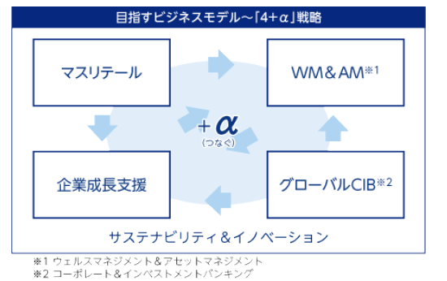
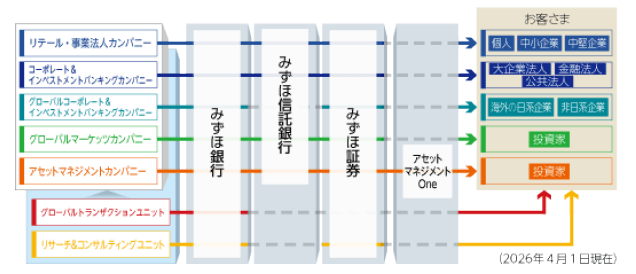
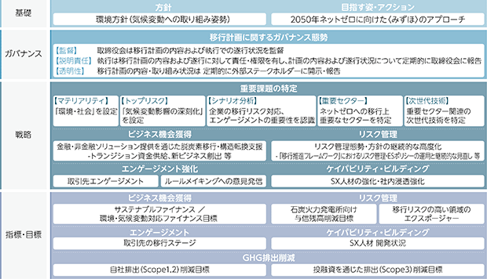

文中の将来に関する事項は、当連結会計年度末現在において当社グループが判断したものであります。
当社グループは、〈みずほ〉として行うあらゆる活動の根幹をなす考え方として、基本理念・パーパス・バリューから構成される『〈みずほ〉の企業理念』を制定しております。この考え方に基づきグループが一体となって事業運営・業務推進を行うことで、お客さまと経済・社会の発展に貢献し、みなさまに〈豊かな実り〉をお届けしてまいります。
基本理念：企業活動の根本的考え方
パーパス：みずほグループの存在意義
バリュー：パーパスを実現するための価値観と行動軸
当社グループの成長戦略は、「個人の幸福な生活とそれを支えるサステナブルな社会・経済」を目標とする〈ありたき世界〉から逆算し、〈10年後の目指す世界〉と、その具体化に向けて取り組むべきテーマをもとに導き出しています。
当社グループは、目指すビジネスモデルとして４つの領域を特定し、各領域内の機能を相互につなぐ「４＋α」戦略を推進するとともに、その実現・成長を支える経営基盤の強化にも取り組んでいます。

2025年度に中期財務目標を２年前倒しで達成したことを踏まえ、2028年度に向けた新たな目標を設定しました。なお、今後の環境変化に応じ前提となるシナリオおよび目指す中期財務目標は適時見直す方針です。
※1 東証基準。その他有価証券評価差額金を含む
※2 ETF関係損益等を含む
2025年度の経済情勢を顧みますと、世界経済は、米国の関税引き上げの影響が懸念されたものの、企業が関税コストを負担し消費者への価格転嫁が抑制されたことや、AI関連需要の強さを受けて堅調に推移しました。一方、中東情勢の緊迫化を受けて原油価格が上昇したほか、金融市場では不安定な動きがみられました。
米国経済は、AI関連需要拡大に伴う設備投資の増加や、株高を背景とした高所得者層の消費にけん引されて底堅い成長を続けています。一方、金融引き締めの影響もあって労働市場は減速しています。インフレ率は鈍化傾向にあるものの、依然FRB（連邦準備制度理事会）のインフレ目標である２％を上回っています。加えて2026年２月末以降は、中東情勢の緊迫化によるインフレ再燃や景気悪化への警戒感が増しています。こうした状況を踏まえ、FRBは2026年３月のFOMC（連邦公開市場委員会）で２会合連続の政策金利据え置きを決定しました。先行きの不確実性が高止まりする中で、今後はインフレや雇用の動向を見定めつつ、慎重に政策方針を決定していくと考えられます。
欧州経済は、内外需とも底堅く推移し緩やかに成長しました。賃金上昇の減速を受けてインフレは鈍化し、インフレ率はECB（欧州中央銀行）のインフレ目標である２％近傍で推移しています。こうした状況を踏まえ、ECBは、2025年６月の会合で政策金利を引き下げた後、政策金利の据え置きを続けました。金利は既に中立水準にあるとみられますが、中東情勢の緊迫化を受けたインフレ圧力の高まりを踏まえ、今後は景気・物価のリスクバランスを点検しながら慎重に政策方針を決定していくと考えられます。
アジア経済は、底堅い成長を続けました。中国では不動産市場の調整が長期化しているほか、関税の影響で対米輸出が減少したものの、政府による内需喚起策や第三国輸出の拡大により底堅い成長となりました。新興国では、関税発動前の駆け込み輸出や、AI需要拡大を受けた好調な半導体市況が景気の押し上げ要因となりました。こうした中、各国中央銀行はインフレの鈍化を背景に政策金利の引き下げを進めてきましたが、中東情勢の緊迫化を受けて通貨安圧力やインフレ圧力が高まっていることから、金融政策の方向性については不確実性が高まっています。
日本経済は、個人消費や設備投資といった内需が底堅く推移し、緩やかに回復しています。高水準の企業収益を背景に賃上げ機運も継続しています。そうしたもとで、日銀は2025年12月に政策金利の引き上げを決定しました。今後は、中東情勢の緊迫化が経済・物価に与える影響を見極めながら、金融政策の方針を決定していくと考えられます。
世界経済の先行きは、底堅いAI関連需要に加えて各国の財政出動が支えとなり、緩やかな成長を続けるものとみられます。日本経済の先行きは、総合経済対策が追い風となり、内需主導で景気が拡大するものとみられます。ただし、中東情勢の緊迫化を受けたエネルギー等の供給制約により、世界全体に景気悪化の懸念や金融資本市場の混乱が広がり、日本経済も悪影響を受ける可能性があります。
■成長戦略
当社グループの成長戦略は、「個人の幸福な生活とそれを支えるサステナブルな社会・経済」を目標とする〈ありたき世界〉から逆算し、〈10年後の目指す世界〉と、その具体化に向けて取り組むべきテーマをもとに導き出しています。
当社グループは、目指すビジネスモデルとして４つの領域を特定し、各領域内の機能を相互につなぐ「４＋α」戦略を推進するとともに、その実現・成長を支える経営基盤の強化にも取り組んでいます。
(1) ４つの戦略領域
●マスリテール
▶ デジタル・リモート・リアルの三位一体での「顧客利便性の徹底追求」と「プロダクトの差別化」により、お客さまから選ばれる「マスリテールにおける最も便利で安心なパートナー」をめざします。お客さま・産業・社会の発展につながる資金供給のために必要となる預金の確保と、将来につながるお客さま層の獲得を実現します。
●ウェルスマネジメント＆アセットマネジメント
▶ お客さまとともに「資産所得倍増」に向けて挑戦し、「個人の幸福な生活」の実現に貢献するために、「資産の形成と運用における最も頼りになるパートナー」をめざします。グループ一体のコンサルティングを強みとして、個人のお客さまの資産形成・運用・承継ニーズに対応するとともに、アセットマネジメントOneの運用力や商品開発力を強化します。
●企業成長支援
▶ 「日本企業の競争力強化」と「サステナビリティ＆イノベーション」に向けた動きを支援し、日本の持続的な成長や国際競争力の向上、脱炭素化・サーキュラーエコノミーへの転換等の「サステナブルな社会・経済」の実現に貢献するために、「事業の創造＆成長に伴走するプロフェッショナル」をめざします。様々な規模やステージのお客さまをつなぎ、事業成長・企業価値向上の徹底的な支援において〈みずほ〉の競争力を発揮し、お客さまとともに成長します。
●グローバルCIB
▶ 米国を中心とした資本市場における高いプレゼンスや、日本を含む充実したグローバルネットワークをいかし、各地域のお客さまに総合的な金融ソリューションを提供します。実りある社会・経済の実現に向け、グローバル企業とともに成長する「グローバルCIBトップ10の戦略パートナー」をめざします。
●企業風土の変革
▶ インターナルコミュニケーションとブランドコミュニケーションの一体での推進を通じた社員・お客さまのエンゲージメントを向上
●人的資本の強化
▶ ビジネス戦略と人事戦略をアラインさせる「戦略人事」の徹底と、その土台となる、社員が自分らしさを起点として一人ひとりのキャリアに向き合う「社員ナラティブ（物語）」の重視の２つの側面から人的資本を強化
●DX推進力の強化
▶ グループの強みを最大限活用したインキュベーション・スケール化の促進、および業務のデジタル化・AI活用推進等による生産性向上、DX人材育成やデータ利活用等により、DX推進基盤を強化
▶ ビジネス部門とIT部門との垣根をなくすことでビジネス実現力を高め、〈みずほ〉の持続的な企業価値向上をめざす
▶ これらの実現に向け、中長期を見据えたコストコントロールを行いつつ、IT改革で進めている各施策の効果を発現させていく
●安定的な業務運営
▶ システム障害風化防止と平時の危機対応力を強化
‒ 大規模なシステム障害を継続して抑止するため、システム障害の再発防止と障害対応力強化の取り組みの継続・定着化、システム障害の風化防止
▶ G-SIBsにふさわしいサイバーセキュリティ態勢を不断に高度化
▶ マネー・ローンダリング対策・テロ資金供与対策（AML/CFT）態勢をさらに強化・拡充
▶ グローバルガバナンスの徹底強化と、外部環境を踏まえた機動的なリスクコントロール
［カンパニー・ユニットの取り組み］
当社グループは、お客さまの属性に応じた銀行・信託・証券等グループ横断的な戦略を策定・推進する５つのカンパニーと、全カンパニー横断的に機能を提供する２つのユニットを設置し、グループを運営しております。

各カンパニー・ユニットの今後の取り組み方針（対処すべき課題）は次の通りです。
リテール・事業法人カンパニー
個人・中小企業・中堅企業の顧客セグメントを担当するカンパニーとして、銀行・信託・証券等グループ一体となったコンサルティング営業や、先進的な技術の活用や他社との提携等を通じた利便性の高い金融・非金融サービスの提供等に取り組んでおります。
(今後の取り組み方針)
安定的な業務運営体制の構築・持続的強化を継続するとともに、お客さまの課題に対するソリューション提供力強化に向けメリハリのある経営資源配分を通じた事業成長を加速させます。
具体的には、個人のお客さまに対しては、グループ一体での総合資産コンサルティング力を発揮するべく、銀行・信託・証券のそれぞれの強みを最大限に活用するとともに、担い手個々人のケイパビリティの底上げ、AI等テクノロジーの活用による生産性向上を図ることで、顧客利便性の徹底追求・「資産所得倍増」に向けた挑戦に取り組んでいきます。法人のお客さまに対しては、金融機関の本源的価値である金融仲介機能（貸出・預金・決済）を改めて発揮していくとともに、銀行・信託・証券の連携、法個一体でオーナー・企業のお客さまの永続的な成長に貢献することで、日本企業の競争力強化に取り組んでいきます。
また、デジタル・リモート・リアルのそれぞれのチャネルの利便性向上や、楽天グループをはじめとしたアライアンス先とのオープンな協業による新たな価値提供を通じ、顧客基盤の持続的な拡大に取り組んでいきます。
2025年９月19日に、株式会社みずほ銀行は、株式会社UPSIDERホールディングスの株式を取得し、株式会社みずほ銀行の連結子会社といたしました。当社グループと株式会社UPSIDERホールディングスは、技術力、ノウハウ、顧客基盤、ネットワーク等を融合させることで、日本企業の課題解決や成長支援をさらに加速できるとの共通認識のもと、一体的なサービス・ソリューションの提供、AIと人の共創による新たな与信モデルの構築、オープンなエコシステムの創造を軸に取り組みを強化していきます。
2026年５月15日に、株式会社みずほ銀行は、ムニノバホールディングス株式会社ならびに株式会社オリエントコーポレーションとの３社で業務提携契約を締結しました。また、株式会社みずほ銀行は、保有する株式会社オリエントコーポレーションの株式について、議決権の15％相当をムニノバホールディングス株式会社に譲渡する株式譲渡契約を締結しました。３社のそれぞれの強みを最大限にいかし、ノンバンクと銀行取引のシームレスな接続の実現に向けて検討をしていくことに合意しました。
2026年５月20日に、株式会社みずほ銀行および楽天銀行株式会社は、メガバンクとデジタルバンクによる、新たな信用創造モデルを確立することを目的として、戦略的な資本業務提携契約を締結しました。株式会社みずほ銀行が対応する法人のお客さま等の資金調達ニーズと楽天銀行株式会社の個人預金を結び付ける様々な施策を行うことが可能となり、株式会社みずほ銀行のオリジネーション力強化と楽天銀行株式会社の運用資産多様化を実現しつつ、企業価値向上、さらには、日本経済そのものの発展に貢献できるものと考えております。
コーポレート＆インベストメントバンキングカンパニー
国内の大企業法人・金融法人・公共法人の顧客セグメントを担当するカンパニーとして、お客さまの金融・非金融に関するニーズに対し、M&Aや不動産関連ビジネス等の投資銀行プロダクツ機能を通じて、お客さまごとのオーダーメード型ソリューションをグループ横断的に提供しております。
(今後の取り組み方針)
資本市場の変化や地政学的リスクの顕在化等により、お客さまを取り巻く環境は、急速且つ急激に変化しています。多様化・高度化するお客さまのニーズに的確に対応するため、銀行・信託・証券等のグループ力を結集し、産業知見や投資銀行をはじめとしたプロダクツ知見をいかしたソリューション提供力を一層強化することで、日本企業の競争力強化を徹底的に支援し、日本産業・経済の発展に貢献してまいります。
グローバルコーポレート＆インベストメントバンキングカンパニー
海外の日系企業および非日系企業等を担当するカンパニーとして、お客さまの事業への深い理解と、銀証連携を軸としたグループ一体でのソリューション提供により、産業の変化・事業構造のトランスフォームを支える金融機能の発揮をめざしてまいります。
(今後の取り組み方針)
各地域で培ったCIB（コーポレート＆インベストメントバンキング）ビジネス基盤の強化に加え、グローバル一体での運営を加速し、グローバルでのソリューション提供力を一層高めることで、金融面からお客さまをサポートし社会的課題の解決に貢献していきます。
更なる事業ポートフォリオの最適化とリスクマネジメントの強化を通じて、持続的成長を実現してまいります。
2025年12月17日に、みずほ証券株式会社は、関連当局の認可等の取得を前提として、Avendus Capital Private Limitedの主要株主との間で、当該主要株主から同社の株式の60%超を取得することに合意し、株式取得に係る契約を締結しました。株式取得の実行後、同社はみずほ証券株式会社の連結子会社となる予定です。当社グループのグローバルな知見と、Avendus Capital Private Limitedのインドにおける専門性を融合させ、「企業の“事業戦略”に強い〈みずほ〉」として、お客さまとともに挑戦し続けます。
グローバルマーケッツカンパニー
お客さまのヘッジ・運用ニーズに対してマーケット商品全般を提供するセールス＆トレーディング業務、資金調達やポートフォリオ運営等のALM・投資業務を担当しております。銀行・信託・証券の連携やCIB（コーポレート＆インベストメントバンキング）アプローチにより、マーケッツの知見をいかした〈みずほ〉にしかできないソリューション・プロダクトの提供をめざしてまいります。
(今後の取り組み方針)
セールス＆トレーディング業務においては、地域ごとの特性に合わせた銀行・証券の実質一体運営の更なる深化により、お客さまへのソリューション提供力向上の継続およびセールス＆トレーディングのグローバル連携やDX活用を通じたトレーディング力強化により、更なるプレゼンス向上に取り組んでまいります。
ALM・投資業務においては、内外の金融政策の変更が想定されるほか、地政学リスクの高まりも意識され、不確実性の高い市場環境が継続しうる中、予兆管理と緻密な市場分析を踏まえた、柔軟かつ機動的なリスクコントロールを継続し、安定的な収益を実現します。また、グローバルALM運営を深化させ、安定的で効率的な外貨資金調達を通じて、グループ全体のビジネスに貢献してまいります。
加えて、セールス＆トレーディング・ALM・投資の各分野におけるサステナビリティ推進・DX推進に取り組んでまいります。
アセットマネジメントカンパニー
アセットマネジメントに関連する業務を担当するカンパニーとして、銀行・信託・証券およびアセットマネジメントOne株式会社が一体となって、個人から機関投資家まで、幅広いお客さまの資産運用ニーズに応じた商品やサービスを提供しております。
(今後の取り組み方針)
注力分野の人材拡充やインオーガニック戦略等により国内・海外資産の運用力を強化し、お客さまのニーズに応じたプロダクトラインアップ・ソリューションの充実を図ることで、中長期志向の資産形成をサポートし、資産運用立国の実現に貢献してまいります。
また、確定給付年金・確定拠出年金関連業務や従業員・役員向けの株式給付信託制度の受託を通じて法人のお客さまの人的資本経営を支援するとともに、金融経済教育等の取り組みにより従業員の皆さまの資産形成を後押ししてまいります。
加えて、リテール・機関投資家向け新規プロダクトの開発、アセットマネジメントビジネスの専門人材強化、資産運用と資産管理一体となったビジネス推進等、持続的成長に不可欠なビジネス基盤強化に取り組んでまいります。
2025年10月２日に、当社は、ステート・ストリート・コーポレーションと、当社グループのグローバル・カストディおよび日本国外の関連事業についての譲渡手続を完了したことを発表しました。
グローバルトランザクションユニット
幅広いセグメントのお客さまに向けた、トランザクション分野のソリューション提供業務を担うユニットとして、国内外決済や資金管理、証券管理等、各プロダクツに関する高い専門性を発揮し、高度化・多様化するお客さまのニーズに応えることをめざしてまいります。
(今後の取り組み方針)
今後もサプライチェーン・生産体制の見直し等の事業構造変化の動きや、政策金利をはじめとする各国の金融政策動向等を機敏に捉え、多様化するお客さまのニーズに柔軟に応えてまいります。国内外各拠点間で緊密に連携しながら、お客さまの課題解決に資するソリューション提供に努め、お客さまとともに〈みずほ〉の成長にも貢献してまいります。
また、金融機関の責務である決済業務の安定的な提供、インフラ基盤の維持・増強に最優先で取り組んでまいります。加えて、決済分野における新技術・インフラの出現といった社会の潮流も踏まえつつ、次世代・新規ビジネスの創出にも取り組んでまいります。
リサーチ＆コンサルティングユニット
産業からマクロ経済まで深く分析するリサーチ機能と、環境・エネルギー等の社会課題の解決支援からお客さまの経営・人事・事業戦略の策定支援にわたるコンサルティング機能を担うユニットとして、各カンパニーと緊密に連携し、グループ一体となってお客さまや社会に対する価値創造の拡大をめざします。
(今後の取り組み方針)
経済・社会の不透明感が一段と増す一方で、日本・日本産業の競争力強化に向けた機運が高まっています。こうした環境下において、高い専門性を有する人材の確保・育成に向けた取り組みを強化するとともに、AIを徹底活用しつつ、一次情報に基づく洞察力と構想力を強みに、社会やお客さまの変革に向けた提言や伴走支援といった人ならではの付加価値を磨き込んでまいります。
また、2026年４月１日に完了した株式会社みずほ銀行とみずほリサーチ＆テクノロジーズ株式会社の統合を梃子にグループ一体運営を深化させるとともに、グループ外との連携等にも取り組み、「〈みずほ〉差別化の源泉」として、時代の一歩先を見据えた価値創造を一層拡大してまいります。
２ 【サステナビリティに関する考え方及び取組】
当社グループのサステナビリティ関連記載事項は、「企業内容等の開示に関する内閣府令及び特定有価証券の内容等の開示に関する内閣府令の一部を改正する内閣府令」（令和８年２月20日内閣府令第５号）附則第２条第1項ただし書きにより「企業内容等の開示に関する内閣府令」（昭和48年大蔵省令第５号）第19条の９第１項に基づき、サステナビリティ開示基準(サステナビリティ基準委員会(SSBJ)が公表する基準をいう。以下同じ)に準拠して作成しております。
サステナビリティ開示基準の適用にあたり、2026年３月13日に改正されたサステナビリティ開示ユニバーサル基準「サステナビリティ開示基準の適用」、サステナビリティ開示テーマ別基準第１号「一般開示基準」及びサステナビリティ開示テーマ別基準第２号「気候関連開示基準」を適用しております。
本サステナビリティ関連記載事項は、当連結会計年度(2025年４月１日から2026年３月31日まで)を報告期間として作成しております。なお、文中における将来に関する事項は、当連結会計年度の末日現在において、当社グループが判断したものであります。また、本サステナビリティ関連記載事項は、サステナビリティ開示ユニバーサル基準「サステナビリティ開示基準の適用」第93項、サステナビリティ開示テーマ別基準第１号「一般開示基準」第42項及びサステナビリティ開示テーマ別基準第２号「気候関連開示基準」第102項に定める経過措置の適用により、比較情報を開示しておりません。
本サステナビリティ関連記載事項は、2026年６月17日に、情報開示態勢に関する審議・調整を行うディスクロージャー委員会によって承認されております。
Ⅰ ガイダンスの情報源によって特定された産業
当社グループが行う事業およびビジネス・モデルが、銀行業務、信託業務、証券業務、その他の金融サービスに係る業務であることに鑑み、当社グループに関連する産業として、SASBスタンダード(2025年12月最終改訂、以下「SASBスタンダード」という)における次の産業を特定しております。
・Commercial Bank(商業銀行)
・IB and Brokerage(投資銀行・ブローカー)
・AM & Custody(アセットマネジメント・カストディ)
・Consumer Finance(消費者金融)
・Mortgage Finance(住宅ローン)
・Software & IT Services(ソフトウェア・ITサービス)
・Professional & Commercial Services(プロフェッショナル・商業サービス)
Ⅱ サステナビリティ関連のリスク及び機会の識別
当社グループは、サステナビリティ関連のリスク及び機会を識別するにあたり、サステナビリティ開示基準を適用しております。
また、上記で特定した、当社グループに関連する産業に関するSASBスタンダードおよびISSB産業別ガイダンスに記載されているサステナビリティ関連のリスク及び機会について、財務的影響と発生可能性の評価を実施しております。
その結果、当社グループの見通しに影響を与えると合理的に見込み得るサステナビリティ関連のリスク及び機会として、次のリスク及び機会を識別しております。
Ⅲ リスク及び機会に関する重要性がある情報の識別
環境の持続性に関するリスク及び機会については、サステナビリティ開示テーマ別基準第２号「気候関連開示基準」を適用し、同基準において要求されている情報を開示するとともに、ISSB産業別ガイダンスを考慮しております。
その他のテーマに関するリスク及び機会については、当該リスク及び機会に具体的に適用される定めがサステナビリティ開示基準に存在しないため、当該リスク及び機会を識別する際に適用した、当社グループに関連する産業に関するSASBスタンダードを考慮しております。
なお、SASBスタンダードの指標については、当社グループの識別したサステナビリティ関連のリスク又は機会に関連する企業のパフォーマンスを測定し、モニタリングするために用いていないため、開示しておりません。
当社グループのコーポレート・ガバナンス体制については、有価証券報告書「
当社グループにおいては、取締役会がサステナビリティ関連のリスク及び機会の監督に責任を負い、サステナビリティへの取り組みに関する基本方針等の決定、サステナビリティ関連の目標の設定や進捗のモニタリングならびに、取締役および執行役の職務の執行状況の監督等を行っております。また、取締役会の諮問機関として、リスク委員会を設置し、リスクガバナンス等に関する決定・監督等に関して取締役会に提言を行っております。これにより、外部有識者の専門的な知見を活用し、適切な監督機能を発揮可能な態勢を構築しております。取締役会およびリスク委員会では、トレードオフを含むサステナビリティ関連のリスク及び機会を考慮して主要なサステナビリティ課題について議論し、その内容を定期的に開示しております。
取締役会やリスク委員会では、執行側のサステナビリティ推進委員会、リスク管理委員会、経営会議等で審議・議論した事項について、年１回以上、報告を受けております。
当社では、適切な監督機能を発揮するため、取締役会全体として備えるべきスキルとして、「経営」「リスク管理・内部統制」「財務・会計」「金融」「人材・組織」「IT・デジタル」「サステナビリティ」「グローバル」を選定しております。これら取締役会全体として備えるべきスキルに対し、各取締役が特に有する中核的なスキルを一覧とした「取締役会スキルマトリクス」をまとめており、当社としては、取締役会全体として必要なスキルが備わっているものと考えております。また、各委員会においても、任意委員会にて外部委員の知見を確保することも含め、各々の役割を踏まえた必要なスキルが備わっているものと考えております。
また、役員報酬制度では、業績連動報酬である「株式報酬Ⅱ」において、「株主」「お客さま」「経済・社会」「社員」のステークホルダーを評価軸とする評価を行う仕組みを導入しており、主な評価指標には、「サステナブルファイナンス額」や「気候変動への取り組み」「ESG評価機関評価」「社員意識調査」等のサステナビリティに関する評価指標を採用しております。
執行において、執行役社長がグループCEOとして当社の業務を統括、執行役社長の諮問機関として経営会議を設置しており、同会議にてサステナビリティに関連する業務執行に関する重要事項を審議しております。また、経営政策委員会等にて、サステナビリティに関連する全社的な諸課題やグループのビジネス戦略上重要な事項について、総合的に審議・調整を行っております。加えて、執行役社長を委員長とするサステナビリティ推進委員会では、気候変動への対応、自然資本の保全や人権尊重等をはじめとした環境・社会課題に関する取り組み等に関して、審議・調整を行っております。執行において議論・決定された主要な事項に関しては、年１回以上、取締役会に報告を行っております。
なお、個別の開示テーマの特性・内容を踏まえて、より精緻なガバナンスを実現するために各開示テーマ特有で取り組むプロセス、統制及び手続は以下の通りです。
取締役会において、環境方針・移行計画等の重要な方針に基づく取り組みならびに取締役および執行役の環境の持続性に関する職務執行状況の監督を行っております。
執行役社長は当社の環境の持続性への取り組みを統括しております。
執行役社長の統括のもと、グループCSuOは気候変動、自然資本、サーキュラーエコノミー等の環境関連全般に関する取り組みを企画・推進、グループCROは気候関連リスク管理の枠組み等の構築・運営を行っております。
取締役会において、人的資本の強化に向けた取り組み、人的リスク管理および人権尊重に関する基本方針等に基づく取り組みならびに取締役および執行役の人的資本に関する職務執行状況の監督を行っております。
執行役社長は当社の人的資本への取り組みを統括しております。
執行役社長の統括のもと、グループCHROは当社グループにおける人事戦略・人的資源管理責任者として、グループ全体の人事運営に関する取り組みを企画・推進、グループCPOはグループ全体の人事運営のうち、人材開発・組織開発責任者として多様な社員の活躍の推進等に取り組み、グループCCuOはグループ全体の企業風土に関する取り組みを企画・推進しております。この三者が相互に連携し合い、人的資本の強化を行っております。
加えて、執行役社長を議長とする人材戦略会議や、グループCHROを委員長とするインクルージョン推進委員会において、人的資本経営に必要な人材育成方針や社内環境整備の方針等の協議、周知徹底、推進を行っております。
取締役会において、人的資本の強化に向けた取り組み、人的リスク管理および人権尊重に関する基本方針等に基づく取り組みならびに取締役および執行役の人権尊重に関する職務執行状況の監督を行っております。
執行役社長は当社の人権尊重への取り組みを統括しております。
執行役社長の統括のもと、グループCSuOは人権方針、調達に関する取組方針等に基づく取り組みを企画・推進、グループCHROは社員向けの人権啓発の取り組みを推進しております。
加えて、グループCHROを委員長とする人権啓発推進委員会において、グループ全体の人権課題や社内啓発体制、社員向け研修のテーマや内容を協議する等、人権尊重の精神にあふれた企業風土が醸成できるように推進を行っております。
取締役会において、コンプライアンスを徹底するにあたっての基本的な事項を定める「コンプライアンスの基本方針」等の決定ならびに取締役および執行役のコンプライアンスに関する職務執行状況の監督を行っております。
執行役社長は当社のコンプライアンスを統括しております。
執行役社長の統括のもと、グループCCOはコンプライアンス全般に係る企画、立案および推進を統括しており、コンプライアンスの遵守状況について、定期的および必要に応じて都度、取締役会に報告しております。
加えて、グループCCOを委員長とするコンプライアンス委員会において、コンプライアンス統括に関する事項等について審議・調整を実施しております。
(a) [データセキュリティ]
取締役会において、コンプライアンスを徹底するにあたっての基本的な事項を定める「コンプライアンスの基本方針」等の決定ならびに取締役および執行役のデータセキュリティ関連の職務執行状況の監督を行っております。
執行役社長は、当社の情報管理を統括しております。
執行役社長の統括のもと、グループCCOは情報管理全般に係る企画、立案および推進を統括しており、情報管理の状況等について、定期的および必要に応じて都度、取締役会に報告しております。
加えて、グループCCOを委員長とするコンプライアンス委員会において、情報管理全般に関する事項等について審議・調整を実施しております。
(b) [サイバーセキュリティ]
取締役会において、サイバーセキュリティリスク管理に関する基本的な方針等に基づく取り組みならびに取締役および執行役のサイバーセキュリティ関連の職務執行状況の監督を行っております。
執行役社長は当社のサイバーセキュリティリスク管理を統括しております。
執行役社長の統括のもと、グループCISOは当社グループ・グローバルのサイバーセキュリティ管理業務全体を統括しており、グループCIOおよびグループCROの指示に従い、適切なサイバーセキュリティリスク管理を行うために必要となる措置を講じており、これらサイバーセキュリティリスク管理の状況等について定期的に経営に報告しております。また、サイバーインシデント発生時には、必要な対策の指示を行います。
当社グループは、サステナビリティを「環境の保全および内外の経済・産業・社会の持続的な発展・繁栄、ならびに当社グループの持続的かつ安定的な成長」と定義しております。サステナビリティへの取り組みを進めることで、様々なステークホルダーの価値創造に配慮した経営と当社グループの持続的かつ安定的な成長による企業価値の向上を実現し、社会課題の解決に貢献していくことをめざしております。
当社グループの見通しに影響を与えると合理的に見込み得るサステナビリティ関連のリスク及び機会については、「１．サステナビリティ関連記載事項の作成方法について ②ガイダンスの情報源に関する情報」をご覧ください。
当社グループは、これらのリスク及び機会の影響が生じると合理的に見込み得る時間軸について、「短期」、「中期」及び「長期」をそれぞれ「１年以下」、「１年超５年以下」及び「５年超」と定義しております。これは、当社グループが単年度の業務計画、３～５年の中期目線でのKPI設定等の策定を通じて戦略的な意思決定を行っており、これらの時間軸との整合性を踏まえて短期・中期の時間軸を定めております。
当社グループは、環境の持続性、人的資本、人権尊重、公正・誠実な企業活動、データセキュリティ関連のリスク及び機会に関する影響については、短期時間軸における単発事象で顕著な財務的影響が発生するよりは、長期時間軸の中で複数の事象が発生・蓄積することで結果的に財務的影響が増大する可能性が高いことから、長期時間軸での影響が生じると見込んでおります。一方で、サイバーセキュリティ関連のリスクに関する影響については、当社グループが重大なサイバー攻撃を受け、重要なシステムならびにサービスの停止や不特定多数の情報漏えい等が発生した結果、短期時間軸における顕著な財務的影響が生じる可能性もあると見込んでおります。
Ⅰ 環境の持続性関連のリスク及び機会が現在及び将来の当社グループのビジネス・モデル及びバリュー・チェーンに与えるもしくは与えると予想される影響
(a)［気候変動(移行リスク)］
炭素税や燃費規制といった政策強化や脱炭素技術への転換の遅れ等といった脱炭素社会への移行による事業環境の変化(移行リスク)に伴い、お客さまの業績の悪化などの影響が生じる可能性があります。
(b)［気候変動(物理的リスク)］
風水災等の災害の増加・激甚化や気温上昇による労働力の低下といった気温の変化と災害による被害の変化(物理的リスク)に伴い、お客さまの事業中断等により業績が悪化し、当社グループの与信関係費用が増加するなどの影響が生じる可能性があります。
(c)［サステナブルファイナンス(機会)］
気候変動関連では、脱炭素社会への移行に向けた産業・事業構造転換や新しい技術の実用化を目指した投資・社会実装といったお客さまの気候変動対応に資するグリーンローン・ボンド、トランジションローン・ボンド等のファイナンスを提供することで既存の取引関係の強化・維持、新たなファイナンス機会の獲得につながる可能性があります。
自然資本関連では、企業の事業活動は様々な生態系サービスを通じて自然資本に支えられ、同時に影響を与えており、日本の「ネイチャーポジティブ経済移行戦略」でもネイチャーポジティブ移行に伴うビジネスチャンスは大きいとされております。当社グループのお客さまでも、幅広いセクターにおいて事業内容に応じた多様な取り組みが進展しつつあり、お客さまの自然資本対応に資するグリーンローン・ボンド、ブルーローン・ボンド等のファイナンスを提供することで既存の取引関係の強化・維持、新たなファイナンス機会の獲得につながる可能性があります。
サーキュラーエコノミー関連では、グローバルで資源不足・制約が顕在化しつつあり、製品・素材の価値を限りなく長期間にわたり保全・維持し、廃棄物の発生を最小化することの重要性が高まっており、お客さまのサーキュラーエコノミー対応に資するファイナンスを提供することで既存の取引関係の強化・維持、新たなファイナンス機会の獲得につながる可能性があります。
足元では、気候変動、自然資本、サーキュラーエコノミーといった環境課題の中での相互連関性を意識した取り組みの重要性も高まっており、領域横断での統合的なアプローチを推進することでビジネス機会がさらに拡大する可能性があります。
Ⅱ 当社グループのビジネス・モデル及びバリュー・チェーンにおいて、環境の持続性関連のリスク及び機会が集中している部分
環境の持続性関連のリスクは、シナリオ分析の結果も踏まえ、お客さまに対する投融資(信用リスク)に集中していると認識しております。電力セクターや資源セクター等、脱炭素社会への転換に起因する移行リスクが高い多排出セクター向けの投融資に集中しております。また、当社グループのお客さまは国内外の様々な地域に広く分布しており、将来的な災害等の発生を勘案しても、物理的リスクが集中している部分はありません。
環境の持続性関連の機会は、当社グループのお客さまへのファイナンス提供の事業活動、バリュー・チェーンでは下流の投融資先に集中しております。
(人的資本関連)(※①概要、②リスク及び機会の識別は全社共通のみ)
Ⅰ 人的資本関連のリスク及び機会が現在及び将来の当社グループのビジネス・モデル及びバリュー・チェーンに与えるもしくは与えると予想される影響
(a)［人材基盤］
受動的で同質性の高い人材だけが集まることにより、革新的な視点からのイノベーションが創出されず、ビジネス・モデルの陳腐化による業績悪化や新たなビジネス機会の喪失、問題発生時に柔軟かつ多面的な対応ができず被害が拡大する等、危機対応能力が低下する可能性があります。
一方で、自発的に挑戦する意欲を持ち、多様な視点や価値観を有する人材が集まること、またすべての社員が互いに認め合い、個々の力を最大限発揮できる環境であることにより、多面的な議論が行われます。その結果、知見やノウハウの掛け合わせによって前例のない新たな気付きが生まれ、イノベーション創出が加速すると同時に、領域や業界、国境等のボーダーを越えた他社や異業種と連携した事業や共同プロジェクトを進める可能性も広がり、多様な知見やネットワークの活用による新たなビジネス機会の創出や、グローバルな視点での価値提供にもつながります。さらに、採用活動において優秀な人材を確保することや社員が新たなスキル・能力を習得することでサービスレベルが向上し、業績向上につながる可能性があります。
(b)［労働環境］
過重労働やハラスメントなど労働環境に問題がある場合、社員のモチベーションが低下し、労働生産性が低下するとともに、休職の増加、離職率の上昇、新たな人材の採用の困難化等が生じ、人手不足が発生して戦略遂行が停滞する可能性があります。
Ⅱ 当社グループのビジネス・モデル及びバリュー・チェーンにおいて、人的資本関連のリスク及び機会が集中している部分
人的資本関連のリスク及び機会は、当社グループのあらゆる事業活動およびバリュー・チェーン全体において幅広く発生し得ます。
(人権尊重関連)(※①概要、②リスク及び機会の識別は全社共通のみ)
Ⅰ 人権尊重関連のリスクが現在及び将来の当社グループのビジネス・モデル及びバリュー・チェーンに与えるもしくは与えると予想される影響
当社グループの社員に対する人権侵害や投融資先が重大な人権への負の影響を引き起こしていること等が明らかになった場合、損害賠償請求訴訟の提起やステークホルダーから人権侵害に深く関与しているとみなされ社会的な批判が高まり、当社グループの信頼やブランド価値が毀損してお客さまが離脱、新規取引の獲得が困難になる等の可能性があります。
Ⅱ 当社グループのビジネス・モデル及びバリュー・チェーンにおいて、人権尊重関連のリスクが集中している部分
人権尊重関連のリスクは、当社グループのあらゆる事業活動およびバリュー・チェーン全体で幅広く発現し得ますが、特に投融資業務に関連してライツホルダーやステークホルダーから指摘・批判を受ける可能性が高いです。
(公正・誠実な企業活動関連)(※①概要、②リスク及び機会の識別は全社共通のみ)
Ⅰ 公正・誠実な企業活動関連のリスクが現在および将来の当社グループのビジネス・モデルおよびバリュー・チェーンに与えるもしくは与えると予想される影響
(a)［企業倫理］
法令・規制違反や役員・社員による不適切な行為・不作為が発生した場合には、損害賠償や行政処分、レピュテーションの毀損等が、お客さまとの取引の減少・解消等につながり、あらゆる事業活動およびバリュー・チェーン全体に影響を及ぼす可能性があります。
(b)［AML/CFT/金融犯罪］
マネー・ローンダリング等や金融犯罪への対策が有効に機能せず、法令・規制違反等が発生した場合には、業務停止、制裁金等の行政処分、レピュテーションの毀損等が、お客さまとの取引の減少・解消等につながり、あらゆる事業活動およびバリュー・チェーン全体に影響を及ぼす可能性があります。
Ⅱ 当社グループのビジネス・モデルおよびバリュー・チェーンにおいて、公正・誠実な企業活動関連のリスクが集中している部分
(a)［企業倫理］
企業倫理関連のリスクは、当社グループのあらゆる事業活動およびバリュー・チェーン全体で幅広く発生し得ます。
(b)［AML/CFT/金融犯罪］
AML/CFT/金融犯罪関連のリスクは、当社グループのあらゆる事業活動およびバリュー・チェーン全体で幅広く発生し得ます。
(情報セキュリティ関連)(※①概要、②リスク及び機会の識別は全社共通のみ)
Ⅰ 情報セキュリティ関連のリスクが現在及び将来の当社グループのビジネス・モデル及びバリュー・チェーンに与えるもしくは与えると予想される影響
(a)［データセキュリティ］
情報管理体制の不備、役員・社員の人為的なミスや悪意ある行動等を原因としたお客さまの情報の漏えい等が発生し、お客さまに不便・不利益を与える可能性があります。重要な情報が外部に漏えいした場合には、損害賠償、行政処分、レピュテーションの毀損等が、お客さまとの取引の減少・解消等につながり、あらゆる事業活動およびバリュー・チェーン全体に影響を及ぼす可能性があります。
(b)［サイバーセキュリティ］
外部からの不正アクセスやコンピュータのウイルス感染、新技術への対応が不十分な場合等に起因するサイバー攻撃を受けた際に、電子データの漏えい・改ざんや業務停止、情報漏えい、不正送金等が発生し、お客さまに不便・不利益を与える可能性があります。また、それに伴う損害賠償請求訴訟の提起、行政処分、レピュテーションの毀損等により、お客さまとの取引の減少・解消等につながり、あらゆる事業活動およびバリュー・チェーン全体に影響を及ぼす可能性があります。
Ⅱ 当社グループのビジネス・モデル及びバリュー・チェーンにおいて、情報セキュリティ関連のリスクが集中している部分
(a)［データセキュリティ］
データセキュリティ関連のリスクは、当社グループのあらゆる事業活動およびバリュー・チェーン全体で幅広く発生し得ます。
(b)［サイバーセキュリティ］
サイバーセキュリティ関連のリスクは、当社グループのあらゆる事業活動およびバリュー・チェーン全体で幅広く発生し得ます。
(環境の持続性)
Ⅰ 気候関連のリスク及び機会が、当報告期間において、企業の財政状態、財務業績及びキャッシュ・フローに与えた影響
(a)［気候変動(移行リスク)］
脱炭素化に向けた事業環境の変化に伴い、お客さまの業績が悪化し、当社グループの与信関係費用等が増加するリスクがありますが、当報告期間において、当社グループの財政状態、財務業績及びキャッシュ・フローに与えた重大な影響はありません。
(b)［気候変動(物理的リスク)］
風水災等の発生に伴い、お客さまの事業中断等により業績が悪化し、当社グループの与信関係費用が増加するリスク等がありますが、当報告期間において、当社グループの財政状態、財務業績及びキャッシュ・フローに与えた重大な影響はありません。
(c)［サステナブルファイナンス(機会)］
脱炭素社会の実現に向けたトランジションの支援に資するファイナンス、生物多様性等も含むグリーンローン・ボンド、水資源保全を目的としたブルーローン・ボンド、さらにサーキュラーエコノミーの実現に資するファイナンスの提供等によって、当社グループの環境・気候変動対応ファイナンスの組成額は約8.0兆円となり、それに伴い役務取引等収益およびその他の経常収益に含まれる貸出・預金関連手数料および引受手数料等にプラスの影響が及ぶ可能性があるものの、当報告期間において、当社グループの財政状態、財務業績及びキャッシュ・フローに与えた重大な影響はありません。
Ⅱ 予想される気候関連のリスク及び機会が、短期、中期及び長期において、企業の財政状態、財務業績及びキャッシュ・フローに与えると予想される影響
(ⅰ) 定量的情報を提供していない理由
(a)［気候変動(移行リスク)］
脱炭素社会への移行に伴う事業環境の変化を理由としたお客さまの業績悪化の影響とそれ以外の理由による業績悪化の影響を区分して識別できず、また、影響を見積もるにあたり、必要となる炭素価格の水準等のシナリオパラメータ等の不確実性の程度が極めて高いために、定量的に捉えることは有用ではありません。
(b)［気候変動(物理的リスク)］
風水災等の発生に伴う当社グループの与信関係費用等の増加の影響を見積もるにあたり、必要となる自然災害の強度等のシナリオパラメータ等の不確実性の程度が極めて高いために、定量的に捉えることは有用ではありません。
(c)［サステナブルファイナンス(機会)］
環境・気候変動対応ファイナンスの組成額が増加することに伴い、重要な財務的影響として、貸出金利息、役務取引等収益に含まれる貸出関連業務手数料やその他経常収益に含まれる引受手数料等が増加する可能性がありますが、今後のお客さまの脱炭素化に向けた事業ポートフォリオの見直しやサプライチェーン転換の進展、環境関連投資へのニーズ、資金調達環境の変化等の不確実性の程度が極めて高いために、定量的に捉えることは有用ではありません。
(ⅱ) 当該財務的影響に関する定性的情報
(a)［気候変動(移行リスク)］
カーボンプライシングをはじめとした環境関連の法令・規制の強化、エネルギーに関する次世代技術の導入の乗り遅れ、環境負荷の高い既存製品・サービス需要減少、環境対応の遅れに起因する消費者からの不買運動等により、お客さまの業績が悪化するリスクがあります。後述の「⑤戦略及び意思決定に与える影響 Ⅰ環境の持続性関連のリスク及び機会に対する対応策または対応計画」に記載の取引先エンゲージメントや環境・社会に配慮した取引に関する取組方針等を通じてリスク低減に努めるものの、これらの動きが加速・激化する場合には、当社グループの貸倒引当金繰入額および貸倒引当金が増加する可能性があります。
(b)［気候変動(物理的リスク)］
風水災等の発生に伴い、お客さまのサプライチェーンの寸断や設備・工場の水没等による事業活動の停止を通じて業績が悪化し、当社グループの与信関係費用等が増加するリスクがあります。後述の「⑤戦略及び意思決定に与える影響 Ⅰ環境の持続性関連のリスク及び機会に対する対応策または対応計画」に記載の脱炭素社会の実現に向けたお客さまの取り組みの支援等を通じてリスク低減に努めるものの、前例のない想定を超えた風水災等が発生した場合には、当社グループの貸倒引当金繰入額や貸倒引当金が増加する可能性があります。
(c)［サステナブルファイナンス(機会)］
気候変動関連では、脱炭素社会への移行に伴い将来の産業・事業構造転換が進展することで、お客さまの事業ポートフォリオの脱炭素化やエネルギー転換、次世代技術の社会実装に向けた取り組みが具現化することで資金需要が増加する可能性があります。自然資本関連では、ネイチャーポジティブへの移行を目指した自然資本関連リスクの回避・軽減、自然損失の阻止・復元等に向けた資金需要が発生する可能性があります。サーキュラーエコノミー関連では、新たなリサイクルシステムの構築や資源循環型サプライチェーンへの転換といったサーキュラーエコノミー産業の創造に向けた資金需要が増加する可能性があります。後述の「⑤戦略及び意思決定に与える影響 Ⅰ環境の持続性関連のリスク及び機会に対する対応策または対応計画」に記載のエンゲージメントを起点としたお客さまの着実なトランジション、自然資本の保全・再生やサーキュラーエコノミーの実現に向けた取り組みを支援することを通じて、お客さまの具体的なファイナンスニーズの把握につながり、その結果として環境・気候変動対応ファイナンスの組成額の増加に伴い当社グループの貸出金利息、役務取引等収益およびその他の経常収益に含まれる貸出・預金関連手数料および引受手数料等が増加する可能性があります。
(人的資本関連)
Ⅰ 人的資本関連のリスク及び機会が、当報告期間において、企業の財政状態、財務業績及びキャッシュ・フローに与えた影響
(a)［人材基盤(リスク)］
社員の自発性・多様性・包摂性が損なわれることにより、イノベーション創出の停滞による成長機会の逸失やインシデントへの不適切な対応等が財務への悪影響を及ぼす可能性がありますが、当報告期間において、当社グループの財政状態、財務業績及びキャッシュ・フローに与えた重大な影響はありません。
(b)［人材基盤(機会)］
社員の自発性を最大限に引き出し、多様性や包摂性を尊重・活かせる環境を整備すること等により、イノベーション創出の加速や社員による新たなスキル・能力の獲得を通じて業績が向上する可能性があります。ただし、これらの人材基盤強化の取り組みは中長期的に効果が発現するものであるため、当報告期間において、当社グループの財政状態、財務業績及びキャッシュ・フローに与えた重大な影響はありません。
(c)［労働環境(リスク)］
顕著な労働問題が発生した場合、社員士気の低下による労働生産性の低下や休職者の増加、離職率の上昇等による人手不足が財務に悪影響を及ぼす可能性があります。しかし、当報告期間において、当社グループの財政状態、財務業績及びキャッシュ・フローに与えた重大な影響はありません。
Ⅱ 人的資本関連のリスク及び機会が、短期・中期及び長期において、企業の財政状態、財務業績及びキャッシュ・フローに与えることが想定される影響
(ⅰ) 定量的情報を提供していない理由
(a)［人材基盤(リスク)］
イノベーション創出の停滞による成長機会の逸失や問題事象への危機対応能力の欠如等による影響とそれ以外の要因による影響を区分して識別することができず、また、人材の自発性・多様性・包摂性の度合いを精緻に見積もることは困難であり、不確実性の程度が極めて高いため、定量的に捉えることは有用ではありません。
(b)［人材基盤(機会)］
イノベーション創出の加速や社員による新たなスキル・能力の獲得等による影響と、それ以外の要因による影響を区分して識別することができず、また、人材の自発性・多様性・包摂性の度合いを精緻に見積もることが困難であり、不確実性の程度が極めて高いため、定量的に捉えることは有用ではありません。
(c)［労働環境(リスク)］
深刻・顕著な労働問題を原因とした労働生産性の低下や人手不足の発生による影響と、それ以外の要因による影響を区分して識別することができず、また、影響を見積もるにあたり必要となる労働関連の法令・規制違反を起点とした社員のモチベーションや採用競争力の低下率等の不確実性の程度が極めて高いため、定量的に捉えることは有用ではありません。
(ⅱ) 当該財務的影響に関する定性的情報
(a)［人材基盤(リスク)］
人材基盤に毀損が生じると、お客さまとの関係性の構築・維持が困難となり、将来の収益源となり得る新たな商品・サービス開発の停滞や、危機対応能力の低下による損失の拡大等の問題が発生します。後述の「⑤戦略及び意思決定に与える影響 Ⅰ人的資本関連のリスク及び機会に対する対応策または対応計画」に記載の人的資本強化の取り組みを通じてリスク低減に努めるものの、人材基盤の毀損が著しい場合には当社グループの競争力や効率性が低下し、最終的に、貸出金、預金、経常利益等が減少する可能性があります。
(b)［人材基盤(機会)］
人材基盤を強化することにより、お客さまとの接点の強化、将来の収益源となり得る新たな商品・サービスの提供力の拡充につながります。加えて、危機対応の高度化により損失も最小化され、当社グループの競争力や効率性が向上します。後述の「⑤戦略及び意思決定に与える影響 Ⅰ人的資本関連のリスク及び機会に対する対応策または対応計画」に記載の人的資本強化の取り組みを通じて当社グループの競争力や効率性が高まり、その結果として貸出金、預金、経常利益等が増加する可能性があります。
(c)［労働環境(リスク)］
労働環境の悪化が生じた場合、社員の短期間での大量離職やレピュテーションの毀損による人材確保の困難化につながり、当社グループの業務運営の安定性・継続性が損なわれます。後述の「⑤戦略及び意思決定に与える影響 Ⅰ人的資本関連のリスク及び機会に対する対応策または対応計画」に記載の職場環境整備や企業風土の変革等を通じてリスク低減に努めるものの、深刻・顕著な労働問題が生じた場合には、貸出金、預金、経常利益等が減少する可能性があります。
(人権尊重関連)
Ⅰ 人権尊重関連のリスクが、当報告期間において、企業の財政状態、財務業績及びキャッシュ・フローに与えた影響
当社グループおよび投融資先において人権侵害が発生し、その対応が不十分な場合には、損害賠償請求訴訟の提起や社会的な信頼の毀損等により、お客さまとの取引減少や社員の離職につながり財務への悪影響を及ぼす可能性がありますが、当報告期間において、当社グループの財政状態、財務業績及びキャッシュ・フローに与えた重大な影響はありません。
Ⅱ 人権尊重関連のリスクが、短期・中期及び長期において、企業の財政状態、財務業績及びキャッシュ・フローに与えると予想される影響
(ⅰ) 定量的情報を提供していない理由
人権侵害への関与を通じたレピュテーションの毀損による影響とそれ以外の要因による影響を区分して識別できず、また、影響を見積るにあたり、必要となる人権侵害への関与を理由としたお客さまとの取引の減少・解消等の発生件数等の不確実性の程度が極めて高いために、定量的に捉えることは有用ではありません。
(ⅱ) 当該財務的影響に関する定性的情報
後述の「⑤戦略及び意思決定に与える影響 Ⅰ人権尊重関連のリスクに対する対応策または対応計画」に記載の人権マネジメントシステムの整備を通じてリスク低減に努めるものの、当社グループおよび投融資先を通じて深刻・顕著な人権侵害への関与の可能性を指摘された場合には、企業イメージの悪化やネガティブキャンペーンの展開等により、新規のお客さまの獲得や人材確保の困難化につながり当社グループの競争力や業務運営の安定継続性が損なわれ、その結果、貸出金、預金、経常利益等が減少する可能性があります。
(公正・誠実な企業活動関連)
Ⅰ 公正・誠実な企業活動関連のリスクが、当報告期間において、企業の財政状態、財務業績及びキャッシュ・フローに与えた影響
(a)［企業倫理］
法令・規制違反や役員・社員による不適切な行為・不作為が発生した場合には、行政処分やレピュテーションの毀損等が発生し、お客さまとの取引減少等が財務への悪影響を及ぼす可能性がありますが、当報告期間において、当社グループの財政状態、財務業績及びキャッシュ・フローに与えた重大な影響はありません。
(b)［AML/CFT/金融犯罪］
マネー・ローンダリング等や金融犯罪への対策が有効に機能せず、法令・規制の違反等が発生した場合には、業務停止、制裁金等の行政処分、レピュテーションの毀損等が発生し、お客さまとの取引減少等が財務への悪影響を及ぼす可能性がありますが、当報告期間において、当社グループの財政状態、財務業績及びキャッシュ・フローに与えた重大な影響はありません。
Ⅱ 予想される公正・誠実な企業活動関連のリスクが、短期、中期及び長期において、企業の財政状態、財務業績及びキャッシュ・フローに与えると予想される影響
(ⅰ) 定量的情報を提供していない理由
(a)［企業倫理］
国内外における法令・規制違反事例の発生、お客さま本位ではない業務運営等、当社グループに求められる社会的責任・使命にふさわしくない行為・不作為や社会的目線から乖離した取り組みに伴う影響とそれ以外の要因による影響を区分して識別できず、また、影響を見積もるにあたり、必要となる企業としてのコンプライアンスの欠如を理由としたお客さまとの取引の減少・解消等の発生件数等の不確実性の程度が極めて高いために、定量的に捉えることは有用ではありません。
(b)［AML/CFT/金融犯罪］
金融サービスが犯罪行為等に悪用され、国際社会からの批判に発展する影響を区分して識別できず、また、影響を見積もるにあたり、必要となるマネー・ローンダリング等・金融犯罪行為に関する態勢上の不備を理由としたお客さまとの取引の減少・解消等の発生件数等の不確実性の程度が極めて高いために、定量的に捉えることは有用ではありません。
(ⅱ) 当該財務的影響に関する定性的情報
(a)［企業倫理］
法令・規制違反や役員・社員による不適切な行為・不作為が発生した場合には、損害賠償、行政処分、レピュテーションの毀損等により当社グループの業務運営に悪影響を及ぼすリスクがあります。後述の「⑤戦略及び意思決定に与える影響 Ⅰ公正・誠実な企業活動関連のリスクに対する対応策または対応計画」に記載のコンプライアンス遵守の取り組みを通じてリスク低減に努めるものの、当社グループにおいて深刻・顕著な法令・規制違反が発生した場合には、その結果として貸出金、預金、経常利益等が減少する可能性があります。
(b)［AML/CFT/金融犯罪］
マネー・ローンダリング等や金融犯罪への対策が有効に機能せず、法令・規制違反等が発生した場合には、業務停止、制裁金等の行政処分、レピュテーションの毀損等により、当社グループの業務運営に悪影響を及ぼすリスクがあります。後述の「⑤戦略及び意思決定に与える影響 Ⅰ公正・誠実な企業活動関連のリスクに対する対応策または対応計画」に記載のAML/CFT/金融犯罪対策を通じてリスク低減に努めるものの、当社グループにおいて深刻・顕著なマネー・ローンダリング等や金融犯罪に係る法令・規制違反等が発生した場合には、その結果として貸出金、預金、経常利益等が減少する可能性があります。
(情報セキュリティ関連)
Ⅰ 情報セキュリティ関連のリスクが、当報告期間において、企業の財政状態、財務業績及びキャッシュ・フローに与えた影響
(a)［データセキュリティ］
情報管理体制の不備、役員・社員の人為的なミスや悪意ある行動等を原因としたお客さまの情報の漏えい等により、当社グループの市場の評価・信認の低下、二次被害(犯罪)の発生懸念による社会への重大な不安の惹起、多額の損失(補償金)等が発生し、お客さまとの取引減少等が財務への悪影響を及ぼす可能性がありますが、当報告期間において、当社グループの財政状態、財務業績及びキャッシュ・フローに与えた重大な影響はありません。
(b)［サイバーセキュリティ］
サイバーセキュリティ対策が奏功せずサイバー攻撃を受けた場合、電子データの漏えい・改ざんや業務停止、情報漏えい、不正送金等が発生し、お客さまとの取引減少等が財務への悪影響を及ぼす可能性がありますが、当報告期間において、当社グループの財政状態、財務業績及びキャッシュ・フローに与えた重大な影響はありません。
Ⅱ 予想される情報セキュリティ関連のリスクが、短期、中期及び長期において、企業の財政状態、財務業績及びキャッシュ・フローに与えると予想される影響
(ⅰ) 定量的情報を提供していない理由
(a)［データセキュリティ］
重要な情報が外部に漏えいした場合の影響とそれ以外の要因による影響を区分して識別できず、また、影響を見積もるにあたり、必要となる情報管理態勢上の不備を理由としたお客さまとの取引の減少・解消の発生件数等の不確実性の程度が極めて高いために、定量的に捉えることは有用ではありません。
(b)［サイバーセキュリティ］
電子データの漏えい・改ざんや業務停止、情報漏えい、不正送金等の発生を通じたレピュテーションの毀損による影響とそれ以外の要因による影響を区分して識別できず、また、影響を見積るにあたり、必要となるサイバーセキュリティ上の不備を理由としたお客さまからの取引の減少・解消の発生件数等の不確実性の程度が極めて高いために、定量的に捉えることは有用ではありません。
(ⅱ) 当該財務的影響に関する定性的情報
(a)［データセキュリティ］
重要な情報が外部に漏えいした場合には、損害賠償、行政処分、レピュテーションの毀損等により当社グループの業務運営に悪影響を及ぼすリスクがあります。後述の「⑤戦略及び意思決定に与える影響 Ⅰ情報セキュリティ関連のリスクに対する対応策または対応計画」に記載の情報セキュリティ対策を通じてリスク低減に努めるものの、深刻・顕著な情報漏えい等が発生した場合には、その結果、貸出金、預金、経常利益等が減少する可能性があります。
(b)［サイバーセキュリティ］
サイバー攻撃による重要なシステムならびにサービスの停止や不特定多数の情報漏えい等が発生した場合には、当社グループに対する信頼が毀損することによって、損害賠償、行政処分、レピュテーションの毀損等により当社グループの業務運営に悪影響を及ぼすリスクがあります。後述の「⑤戦略及び意思決定に与える影響 Ⅰ情報セキュリティ関連のリスクに対する対応策または対応計画」に記載のサイバーセキュリティ対策を通じてリスク低減に努めるものの、前例がなく想定を超えたサイバー攻撃を受けた場合には、その被害の結果として貸出金、預金、経常利益等が減少する可能性があります。
(環境の持続性)
Ⅰ 環境の持続性関連のリスク及び機会に対する対応策または対応計画
当社グループでは、環境方針で掲げる取り組み姿勢を実践するため、2050年の脱炭素社会の実現に向けて目指す姿・行動を示す「2050年ネットゼロに向けた〈みずほ〉のアプローチ」および中長期の戦略・取り組みを明確化した「ネットゼロ移行計画」を策定しております(詳細については「Ⅵ 気候関連の移行計画」をご参照ください)。
(ⅰ) 取引先エンゲージメント
当社グループは、気候変動への対応においてリスク管理・機会獲得の両面から取引先とのエンゲージメントを重視しております。取引先のカーボンニュートラル戦略、事業戦略、財務・資本戦略に対して、「分析・構想」「建設的な対話」「ソリューション提供・共創」によってアプローチしております。エンゲージメントを起点に、取引先のトランジションを支援することで、当社グループと取引先双方において移行リスク低減・ビジネス機会獲得の両面で企業価値向上につながり、実体経済の移行促進・脱炭素社会の実現に貢献していきます。
(ⅱ) 環境・社会に配慮した取引に関する取組方針
当社グループは、環境・社会への負の影響を防止・軽減するため、投融資等を通じて負の影響を助長する可能性が高い事項やセクターを特定し、「環境・社会に配慮した取引に関する取組方針」を制定しております。
(ⅲ) お客さまの着実なトランジション支援
当社グループは、脱炭素社会への移行に伴うビジネス機会を追求するため、将来の産業構造転換につながるお客さまの事業ポートフォリオ見直しやサプライチェーン転換、次世代技術の社会実装に向けた取り組みに対し、課題の認識から戦略の立案、その具現化・事業化、実行段階のファイナンスまで、金融・非金融の両面から一貫した支援を提供しております。
(ⅳ) 将来のカーボンニュートラルに向けた布石
当社グループは、日本の脱炭素社会の実現に向けて多排出セクターのエネルギー転換と、排出削減が困難な領域でのCO2の回収・オフセットを注力領域として、次世代技術や市場拡大に向けた取り組みを進めております。
・エネルギー転換に向けた取り組み
水素等を電源、熱源、原材料の脱炭素化に広く貢献する重要なエネルギーと認識し、需要創出・コスト低減とサプライチェーンの構築に向けて、水素等の製造分野等へのファイナンス実行を推進しております。
・CO2回収・オフセットに向けた取り組み
カーボンクレジットを、脱炭素プロジェクトに資金を供給するメカニズム、かつ社会全体でのネットゼロの実現に向けて取り組みの拡大が期待できる枠組みと認識し、創成期にあるカーボンクレジット市場の整備・発展に向けて取り組んでおります。
(ⅴ) 気候変動、自然資本、サーキュラーエコノミー分野の統合的対応
環境課題の中での相互連関性も重視して、気候変動に加え、自然資本、サーキュラーエコノミーのシナジー・トレードオフを意識した取り組みにも注力しております。
お客さまのネイチャーポジティブに資する事業活動への自然資本関連・ブルーファイナンスの提供、自然資本関連のリスク・機会の可視化およびTNFD対応支援等の自然資本関連コンサルティングの実施、他社との連携を通じた自然資本関連領域における商品開発やサービス拡充にも取り組んでおります。
サーキュラーエコノミーでは、グループのファイナンス機能の提供や産官学・地域とのネットワークを活用したプラットフォーム作りに取り組むとともに、地域のリサイクルシステムの構築や製品製造と廃棄物のリサイクル・適正処理の連携を図る中核的企業の創出といった「地域軸」と、SAFや蓄電池等の新領域でのリサイクルシステム構築への関与といった「領域軸」の２つのアプローチで取り組みを進めております。
(ⅵ) 適応の取り組み
自然災害に対する脆弱性が高いASEANでは、政府がタクソノミーやガイダンスの開発をはじめる等「適応」に対する資金動員が喫緊の課題となっており、当社グループもASEANの資本市場規制当局イニシアティブの「適応WG」議長に就任することで適応への投融資促進を目的としたガイダンス構築に向けて民間の立場から貢献しております。お客さまの適応・レジリエンス向上の取り組みに対して、新たなファイナンス商品の開発を通じた資金支援や、水害評価関連のシミュレーション技術を活用したコンサルティングサービスの提供を行っております。
Ⅱ 報告期間の末日において資源を確保している方法及び将来において資源を確保するための計画
当社グループは環境の持続性関連のリスク及び機会に対する対応策または対応計画として気候関連の移行計画を策定しております。移行計画は当社グループの気候変動対応をより統合的に推進する目的で策定され、当該移行計画の推進のための資源(高度なナレッジ・スキルを身に付けた人材の確保、気候関連のリスク管理プロセスの高度化に関する能力の獲得、お客さまの脱炭素社会への移行に向けた産業・事業構造転換や新しい技術の実用化を目指した動きを支援するためのファイナンスの提供を含む)を確保、または確保するための計画を有しております。
Ⅲ 過去の報告期間に開示した計画に対する進捗
計画の進捗状況については、「Ⅰ環境の持続性関連のリスク及び機会に対する対応策または対応計画」の中に含めて記載しております。過去の報告期間に開示した「石炭火力発電所向け与信残高」および「環境・気候変動対応ファイナンス」に関する進捗については、「５．指標及び目標 ⑧気候関連の目標に関する開示」をご覧ください。
Ⅳ 環境の持続性関連のリスク及び機会のトレードオフ
想定されるリスクと機会のトレードオフとして、機会の追求としてお客さまの着実なトランジション支援等に係るファイナンス提供を増やした結果、多排出セクター等の移行リスクが高い取引先の信用エクスポージャーが一時的に増加する可能性がありますが、エンゲージメントを通じたリスクコントロールによって長期的に移行リスク低減・ビジネス機会獲得を両立させた支援が実施可能と考えております。
Ⅴ 気候関連のリスク及び機会に対処するための、現在又は将来の、直接的及び間接的な緩和及び適応の取り組み
(ⅰ) リスク
移行リスク、物理的リスクについては、リスクの波及経路の把握やデータの整備、分析手法の改善など、シナリオ分析の高度化に引き続き取り組み、影響額の精緻な把握に努めます。また、潜在的な影響度や蓋然性を踏まえ、重要性が高いと判断されるリスクについては、「Ⅰ環境の持続性関連のリスク及び機会に対する対応策または対応計画」に記載の緩和及び適応の取り組みを推進することで、リスクの低減にもつなげております。
(ⅱ) 機会
環境・社会の持続性向上に資する領域における技術開発やビジネス・モデル構築に向けた実証・創業段階のプロジェクトを対象としたトランジション出資枠や、社会課題への対応や新規需要の創出、新たな事業モデルの実現等の技術の商用化を目指す新規事業会社を対象とした価値共創投資を枠組みとして設定することで、脱炭素社会の実現に向けたリスクマネーの供給に積極的に取り組んでおります。これらの出資を通じて環境・気候変動対応ファイナンスの潜在ニーズがある取引先との関係強化を進めることで、将来のファイナンス機会の獲得につなげていきます。
Ⅵ 気候関連の移行計画
実体経済の移行促進・ビジネス機会獲得・リスク管理の観点から、当社グループの気候変動対応をより統合的に推進するため、「〈みずほ〉のネットゼロ移行計画」を策定しております。ネットゼロに向けた移行経路は地域や業種によって多様であり、ネットゼロへの移行を加速させるためには、各国政府の強いリーダーシップ・実効的な政策や、次世代技術の確立が不可欠です。現在のコミットメント・政策・技術と移行経路との間には埋めるべきギャップがあり、ステークホルダーと協力して解決していく必要があると認識しております。当社グループは、事業を展開する地域や経済・業界団体・イニシアティブ等における活動を通じ、各国政府による秩序ある移行に向けた政策を支援するとともに、クリーンで革新的な次世代技術の開発や実用化の支援を積極的に行います。
〈みずほ〉のネットゼロ移行計画(概要)

Ⅶ 気候関連の目標を達成するための計画
気候関連の目標に関する詳細については、後述の「５．指標及び目標 ⑧気候関連の目標に関する開示」をご覧ください。
サステナブルファイナンス目標に向けて、エンゲージメントを起点にお客さまの課題やニーズを的確に捉えることでファイナンス提供の機会を着実に獲得、新たなファイナンス商品の継続的な開発も進めることで、グリーン・トランジション資金やテクノロジーの実用化を支援するリスクマネーを積極的に供給していきます。
石炭火力発電所向け与信残高削減目標の達成に向けて、環境・社会に配慮した取引に関する取組方針において、石炭火力発電を主たる事業とする現在投融資等の取引がない企業への投融資等、および新規の石炭火力発電所の建設や既存の石炭火力発電所の拡張を資金使途とする投融資等を禁止しております。
(人的資本関連)
Ⅰ 人的資本関連のリスク及び機会に対する対応策または対応計画
価値創造の源泉として人的資本を捉えており、その人的資本を持続的に強化する基盤となるのが2024年度に移行した新たな人事の枠組みである〈かなで〉です。戦略人事を徹底すること、社員ナラティブを重視した人事運営を行うことで、ビジネス戦略に応じた機動的な人事運営を実現させるとともに、社員が自分らしく自身のキャリアに向き合い、成長することを後押しする取り組みを進めております。社員一人ひとりが自分らしく輝き、会社とともに成長していくために、以下の取り組みを行っております。
(ⅰ) 戦略人事
カンパニー制の枠組みの中で、エンティティの壁を越えた機動的な人材配置とビジネスをリードする人材育成の実現を目指して、ビジネス部門が主体的に人事運営を担い、戦略に沿った計画的な人材獲得・育成を推進するとともに、事業領域横断的な経営リーダーの育成に取り組んでおります。
(ⅱ) 社員ナラティブ
すべての社員が「自分らしくある」ことを実現することで、成長に喜びを感じ〈みずほ〉で働く意義を実感できるよう、「キャリアディベロップメント運営」による学びへの投資や機会提供、インクルーシブな組織の構築、社員が健康かつ安心して働ける職場環境の整備を実施しております。
(ⅲ) 企業風土の変革
組織風土は〈かなで〉において社員ナラティブを重視しながら戦略人事を徹底するうえでの重要な基盤であり、良好な風土のもとでこそ企業価値創出の源泉である人材が能力を最大限に発揮することができます。“すべての役員・社員が企業理念を自分ごととして捉え、その体現に向け自発的に思考し、行動して一体となり、お客さま・経済・社会に価値提供できる状態”を目指して、インターナルコミュニケーションとブランドコミュニケーションに取り組んでおります。
Ⅱ 人的資本関連のリスク及び機会のトレードオフ
社員一人ひとりの人材力強化を目指し、自分らしいキャリアの実現に向け、より上位の役割や新たな業務領域への挑戦を促しております。社員の成長や組織力の向上という機会が生まれる一方で、本人の意向に反する登用や異動が生じてしまうおそれがあります。対話を重視した評価制度や、キャリア面談等を通じて社員とマネージャー間で社員本人のキャリア志望を事前にすり合わせることで、そのようなギャップの発生を回避することに努めております。
(人権尊重関連)
Ⅰ 人権尊重関連のリスクに対する対応策または対応計画
当社グループは、事業活動が与え得る人権への負の影響を防止または軽減するために、国連「ビジネスと人権に関する指導原則」等の国際規範を参照し、人権方針を制定し人権尊重へのコミットメントを実施しております。
(ⅰ) 当社グループ内
役員および社員の人権意識を高めることに積極的に取り組んでおり、人権研修の実施や人権啓発教材の作成・提供といった啓発活動、全部室店への人権啓発推進責任者と人権啓発推進委員の配置等による推進体制の整備を行っております。また、人権侵害の懸念事象に適切に対応できるように匿名性や秘密保持、公平性、通報者の権利の保護を保証して社員が安心して利用できる「人権ヘルプライン」等の相談・苦情窓口を設定しております。
(ⅱ)サプライチェーン全体
人権尊重に関する適切な対応を行わない企業に金融サービスの提供を行った場合、お客さまや社会からの当社グループに対する信頼を毀損したり、投融資等の回収に懸念が生じたりする可能性があると認識しており、「環境・社会に配慮した取引に関する取組方針」を制定し、投融資等を通じて人権に負の影響を及ぼす可能性が高い事項やセクターを特定しております。投融資をはじめとした取引関係を通じて人権への負の影響に関与するリスクを管理すべく、(ア) 人権への負の影響の特定・評価、(イ) 人権への負の影響の予防・軽減、(ウ) 対応状況のモニタリング、(エ) 情報開示・情報提供を行い、適切な人権デューデリジェンスを実施しております。
(ア) 人権への負の影響の特定・評価
事業活動が人権に及ぼす潜在的な負の影響を特定・評価し、人権課題マップを作成しております。優先的に対応を強化すべき人権問題は定期的に点検し、内外の事業環境の変化やステークホルダーからの要請等も踏まえて、課題の類型や当社グループの関わり方(直接引き起こした/助長した/直接結び付いている)、深刻度と発生可能性を見直します。また、人権インシデントを検知した場合は、必要に応じてライツホルダーとの対話等も行い、強化デューデリジェンス（以下「強化DD」という）実施の要否を判断します。
(イ) 人権への負の影響の予防・軽減
人権への負の影響が認められると評価された場合、負の影響の防止・軽減に取り組みます。当社グループの主要業務である投融資においては、方針・手続を制定し、負の影響を予防・軽減する仕組みを導入しております。重大なインシデントを検知した場合、強化DDの枠組みに基づいて取引先の対応状況を検証し、必要に応じてエンゲージメントを通じた改善の要請等の対応を行います。
(ウ) 対応状況のモニタリング
エンゲージメントの実績を含む強化DDの実施状況や人権尊重の取り組み状況をモニタリングし、年１回以上、取締役会や経営会議等に報告しております。個々のインシデントについては、取引先における対応の有効性を検証し、継続的なモニタリングや追加的な要請の要否を検討します。
(エ) 情報開示・情報提供
ステークホルダーと積極的にコミュニケーションを行い、人権尊重の取り組み状況を開示することで透明性を確保しております。
(公正・誠実な企業活動関連)
Ⅰ 公正・誠実な企業活動関連のリスクに対する対応策または対応計画
(a)［企業倫理］
当社グループでは、コンプライアンスを徹底するにあたっての基本的な事項である「コンプライアンスの基本方針」を定め、すべての役員・社員が遵守すべき規範として「みずほの企業行動規範」を定めております。また、実践すべき行動様式として「コンプライアンスの行動指針」を定め、継続的な研修や経営陣からのメッセージ等を通じて、役員・社員一人ひとりに周知徹底しております。
コンプライアンスの遵守状況については、各部署自らがチェックを行うことに加え、コンプライアンス統括部署がモニタリングを実施しております。
(b)［AML/CFT/金融犯罪］
当社グループでは、国内外の法令・規制のほか、各国監督当局や国際機関からの要請に応えるための態勢を整備するとともに、外部専門家の知見の導入や外部専門機関との連携により、対応の強化に取り組んでおります。
国内において被害が増加している特殊詐欺やSNS型投資詐欺等に関して、お客さまへの注意喚起の強化や、取引のモニタリング・取引停止措置の実施等を通じて、被害の発生・拡大の防止に努めております。
(情報セキュリティ関連)
Ⅰ 情報セキュリティ関連のリスクに対する対応策または対応計画
(a)［データセキュリティ］
当社グループでは、コンプライアンスを徹底するにあたっての基本的な事項である「コンプライアンスの基本方針」を定め、情報資産の適切な保護と利用についての基本的な取り組み方針として「情報セキュリティポリシー」を定めております。また、「情報セキュリティポリシー」に基づき、具体的に遵守すべき事項および基準として「情報セキュリティスタンダード」を制定し、役員・社員に対する教育・研修等により情報管理の重要性を周知徹底しております。情報セキュリティの遵守状況については、リスクを適時かつ正確に把握し、モニタリングを実施しております。
(b)［サイバーセキュリティ］
当社グループは、サイバーセキュリティの強化を経営の重要課題として認識し、経営層主導のもと、金融という重要な社会インフラの担い手として、安全・安心なサイバー空間の構築に貢献することを「サイバーセキュリティ経営宣言」にて意思表明を行い、継続的にグループ・グローバルおよびサードパーティを含めた対策を推進しております。具体的には、サイバーセキュリティリスク管理に関する当社グループの基本的な方針を定め、当社グループの業務やシステムの特性を踏まえたリスク評価等によりサイバーセキュリティリスクの所在と大きさを特定し、リスクに応じた適切な防御策を講じるとともに、サイバー攻撃を受けた際に迅速に対応できる態勢を整備しております。また、深刻化するサイバー攻撃や防御技術の進歩等の情報を日々収集し、サイバーセキュリティの更なる高度化に向けた計画を策定のうえ、当社グループ全体のサイバーセキュリティリスクを適時かつ正確に把握し、モニタリングしております。
(環境の持続性(気候レジリエンス))
当社グループが識別した気候関連のリスク及び機会を考慮した当社グループの戦略及びビジネス・モデルの気候レジリエンスについて、様々な気温変化や移行経路を考慮したシナリオ分析を実施することで、移行リスク・物理的リスク両面での評価を行っております。
Ⅰ シナリオ分析
当社グループのシナリオ分析では、様々な将来の状態に対する計画の柔軟性や戦略のレジリエンスを高めるべく、多様な範囲のシナリオを用いて分析しております。
分析に用いた気候関連のシナリオは、各国の金融機関が採用しているNGFS(Network for Greening the Financial System)のシナリオを使用しており、パリ協定の目標である「気温上昇を2℃より十分下方に抑えるとともに1.5℃に抑える努力を継続する」ことと整合するBelow 2℃、Net Zero 2050を含めて分析しております。
気候変動がもたらす様々な影響を評価するために、世界観および代表的なリスクファクターの経路が異なる複数のシナリオを用いることで、気候関連の変化、進展または不確実性に対するレジリエンスの評価に有効だと判断しております。
お客さまの業績の予測においては、NGFSにて与えられる炭素価格を炭素税等の温室効果ガス排出コストと仮定し、一定の顧客転嫁率を設定のうえ、財務インパクトを推定しており、また、気温変化の影響については、国または地域レベルの変数を用いてマクロ経済を介した影響を分析しております。なお、与信コストおよび毀損額の算出にあたっては、基準年度末のエクスポージャーおよび資産額を2050/2100年まで一定としております。
Ⅱ レジリエンスの評価
当社グループのシナリオ分析では、気候関連リスクがもたらす財務への影響を定量的に分析し、当連結会計年度の末日における戦略及びビジネス・モデルのレジリエンスの検証を実施しております。
(a)［気候変動(移行リスク)］
最も影響の大きいシナリオにおいても単年度の平均与信コストは期間損益の範囲内であり、当社グループの戦略及びビジネス・モデルのレジリエンスへの影響は限定的であることを確認しております。また、シナリオ間の比較から、秩序ある移行およびその戦略の重要性を認識しました。
ただし、脱炭素政策導入やそれに伴う市場の変化、新技術実用化の時期等の重大な不確実性にさらされており、それが戦略及びビジネス・モデルに影響する可能性があります。
当社グループは国内外に広範なネットワークを持つ金融機関として、お客さまとの深度あるエンゲージメントや各種ルールメイキングへの意見発信が可能であり、お客さまの早期の事業構造転換の促進や各国政府による秩序ある移行に向けた政策の立案・遂行の支援に取り組んでおります。
(b) ［気候変動(物理的リスク)］
最も影響の大きいシナリオにおいても単年度の平均与信コストおよび毀損額は期間損益を大きく下回り、当社グループの戦略及びビジネス・モデルのレジリエンスへの影響は限定的であることを確認しております。
ただし、物理的リスクの顕在化によるマクロ環境の変化やサプライチェーンから生じる影響等の重大な不確実性にさらされており、それが戦略及びビジネス・モデルに影響する可能性があります。
当社グループのお客さまは国内外の様々な地域に広く分布しており、投融資ポートフォリオの分散が図れていることから、リスクを吸収する力を有するとともに、今後物理的リスクが顕在化した際には、必要に応じて投融資ポートフォリオの見直しや新たな投資機会への迅速な対応など、戦略及びビジネス・モデルを柔軟に調整することが可能です。
当社グループが識別した人的資本関連のリスクに対し、「３．戦略 ⑤戦略及び意思決定に与える影響 Ⅰ人的資本関連のリスク及び機会に対する対応策または対応計画」に記載の通り、継続的に取り組んでおり、当連結会計年度の末日におけるレジリエンスは、当該リスクに十分に対応できる体制が整っていると評価しております。
Ⅰ レジリエンスの評価手法
ガバナンス体制の整備とリスク管理プロセスの高度化を通じて、人材基盤や労働環境に関する主要なリスクを特定し、定期的にリスクアセスメントを実施しております。具体的には、注力分野における人材確保の状況、社員エンゲージメントや離職率、労働災害の発生件数等、定量的な指標を活用して人材基盤および労働環境の健全性を把握しております。また、多様な社員の活躍推進施策やウェルビーイングの追求を通じて、社員の士気向上や組織の適応力強化に努めております。社員や労働環境に関するインシデントが発生した場合に、速やかに状況把握・対応できる体制を整備しております。
Ⅱ レジリエンスの評価にあたり考慮した時間軸
長期の時間軸でレジリエンス評価を行っております。
当社グループが識別した人権尊重関連のリスクに対し、「３．戦略 ⑤戦略及び意思決定に与える影響 Ⅰ人権尊重関連のリスクに対する対応策または対応計画」に記載の通り、継続的に取り組んでおり、当連結会計年度の末日におけるレジリエンスは、当該リスクに対応するうえで十分であると評価しております。
Ⅰ レジリエンスの評価手法
執行役社長を委員長とするサステナビリティ推進委員会において、人権全般に関する事項について審議・調整を実施しております。具体的には、人権関連のインシデントの発生状況や社内外のステークホルダーの要請・期待等を参考に、顕著な人権課題の特定や、強化DDの運用、啓発(研修)活動等において適切な対応を実施できているかを定期的に検証しております。
Ⅱ レジリエンスの評価にあたり考慮した時間軸
長期の時間軸でレジリエンス評価を行っております。
当社グループが識別した公正・誠実な企業活動関連のリスクに対し、「３．戦略 ⑤戦略及び意思決定に与える影響 Ⅰ公正・誠実な企業活動関連のリスクに対する対応策または対応計画」に記載の通り、継続的に取り組んでおり、当連結会計年度の末日におけるレジリエンスは、当該リスクに対応するうえで十分であると評価しております。
Ⅰ レジリエンスの評価手法
当社グループでは、コンプライアンスに係る教育と研修をコンプライアンスを徹底する重要な施策として位置付け、全社員を対象としたeラーニング研修を実施するとともに、役員、部長、コンプライアンス管理者等の各階層に対して職務に即した内容の研修を提供し、幅広い層に対して実効性のある研修を行っております。
また、法令・規制の改廃動向、グループ内外の法令・規制違反の発生動向、苦情の発生動向等コンプライアンス関連情報の所在を把握のうえ、コンプライアンス態勢の適切な運営にあたり必要な情報を収集しております。収集した情報に基づき、事象の重大性、当社グループへの影響度、発生可能性や最大リスクを考慮のうえ、必要に応じて執行役社長および取締役へ報告するとともに、コンプライアンス統括に関する事項等について、グループCCOを委員長とするコンプライアンス委員会において審議・調整を実施しております。このような取り組みは、定期的に経営会議等で報告しております。
Ⅱ レジリエンスの評価にあたり考慮した時間軸
長期の時間軸でレジリエンス評価を行っております。
当社グループが識別したデータセキュリティ関連のリスクに対し、「３．戦略 ⑤戦略及び意思決定に与える影響 Ⅰ情報セキュリティ関連のリスクに対する対応策または対応計画」に記載の通り、継続的に取り組んでおり、当連結会計年度の末日におけるレジリエンスは、当該リスクに対応するうえで十分であると評価しております。
当社グループが識別したサイバーセキュリティ関連のリスクに対し、以下の「Ⅰレジリエンスの評価手法」に記載の通り、継続的に取り組んでおり、当連結会計年度の末日におけるレジリエンスは、当該リスクに対応するうえで十分であると評価しております。
Ⅰ レジリエンスの評価手法
(a)［データセキュリティ］
当社グループでは、情報管理に係る関係法令・規制等や社内規程の周知徹底と情報セキュリティ意識の向上を図る内容の教育・研修を行っております。
情報の各管理段階(取得・入力、利用・加工、保管・保存、移送・送信、消去・廃棄)において、Need To Know原則に基づき、情報資産の分類や記録媒体等の性質等に応じた適切な安全管理措置(組織的・人的・物理的・技術的)を講じております。
また、社員による情報セキュリティポリシー等の社内規程等の遵守状況について、定期的に記録・確認および点検・監査を実施するとともに、情報管理全般に関する事項等について、グループCCOを委員長とするコンプライアンス委員会において審議・調整を実施しております。このような取り組みは、定期的に経営会議等で報告しております。
(b)［サイバーセキュリティ］
サイバーセキュリティリスクの所在・大きさやサイバー攻撃の被害を受けた場合の影響度、サイバー攻撃への技術的対策の有効性を評価するため、脆弱性診断やTLPT(*1)等を定期的に実施しております。また、経営層を含めたインシデント対応訓練や社員レイヤーごとのサイバーセキュリティ研修、全社員を対象とするフィッシングメール訓練等を実施することで、サイバー攻撃が発生した場合に組織的に適切な対応が取れるかを定期的に検証し、認識した課題等を解消しております。このような取り組みは、定期的に経営会議等で報告しております。
(*1)Threat-Led Penetration Testing(実際の技術を使用してシステム侵害を試みることで、セキュリティの強度を確認するテスト)
Ⅱ レジリエンスの評価にあたり考慮した時間軸
(a)［データセキュリティ］
中期の時間軸でレジリエンス評価を行っております。
(b)［サイバーセキュリティ］
短期の時間軸でレジリエンス評価を行っております。
当社グループのサステナビリティ関連のリスク及び機会の識別方法および識別結果については、「１．サステナビリティ関連記載事項の作成方法について ②ガイダンスの情報源に関する情報」をご覧ください。
識別したリスク及び機会の内容が、どのような波及経路・場面で顕在化するか、財務的影響が発現するまでの流れを示すシナリオパスを策定し分析することで、リスク及び機会の財務に与える影響の把握に活用しております。
サステナビリティ関連のリスク及び機会の評価・優先順位付けにおいては、識別したリスク及び機会に関する「潜在的な財務的影響」と「発生可能性」に基づき、当社グループの見通しに影響を与えると合理的に見込み得るサステナビリティ関連のリスク及び機会(以下、重要なリスク及び機会)を選定しております。「潜在的な財務的影響」の評価にあたっては、一定のクライテリアを設定して事業継続性や戦略達成への影響度という観点で評価を実施しております。なお、クライテリアの設定は、影響範囲、レピュテーションおよび経営基盤への波及等を考慮しております。また、識別されたサステナビリティ関連の重要なリスク及び機会について、定期的に、当社グループ全体の「トップリスク」の選定状況との整合性を確認しております。
サステナビリティ関連のリスク及び機会は、定期的にモニタリングを実施し、取締役会等への報告を行います。また、外部環境や当社グループの戦略に変化が生じた場合、サステナビリティ関連のリスク及び機会の見直しも都度実施します。
当社グループは、事業戦略・財務戦略とリスク管理の一体運営を通じて企業価値の向上を実現する観点から、リスクアペタイト・フレームワーク(RAF)を導入しております。また、リスクの要因別に「信用リスク」「市場リスク」「オペレーショナルリスク」等のリスクカテゴリーに分類し、各リスク特性に応じた管理を行ったうえで、リスクを全体として把握・評価し制御していく、総合的なリスク管理態勢を構築しております。当社グループは、こうしたリスク管理フレームワークの中でサステナビリティに関連するリスクを認識し、業務計画遂行上重要なリスクを特定したうえで、各リスクカテゴリーの特性や事業戦略を踏まえてリスクをコントロールしております。
また、当社は、当社グループに重大な影響を及ぼすリスク認識を選定する「トップリスク運営」を導入しております。2026年４月現在のトップリスクには、「環境・気候変動影響の深刻化と各国政策の多様化への対応」、「人材不足等による持続的成長の停滞」、「役員・社員による不適切な行為・不作為」、「マネロン・テロ資金供与」、「サイバー攻撃」等が含まれます。選定したトップリスクについては、未然防止策や事後対応等のリスクコントロール強化策の検討、業務計画への反映等を通じ、リスクコントロールやガバナンスの強化に活用しております。当社のトップリスク運営等の詳細については、有価証券報告書「
なお、個別の開示テーマの特性・内容を踏まえて、より精緻・詳細なリスク管理を実現するために各開示テーマ特有で取り組むプロセスは以下の通りです。
Ⅰ 気候関連リスク管理に関する方針
当社グループは、気候関連リスクの識別等およびモニタリングに関する基本的な方針を定めております。本基本方針に基づき、シナリオ分析結果等を参考として気候関連リスクの影響度や蓋然性を評価するとともに、重要性の高い気候関連リスクにおいては、必要に応じて定性・定量面それぞれの面から管理し、適切な対応を行っております。
Ⅱ 環境・社会に配慮した取引に関する取組方針
当社グループは、「みずほの企業行動規範」、「環境方針」等において環境に配慮して行動すること等を約束しております。これに基づき、環境・社会への負の影響を防止・軽減するため、投融資等を通じて負の影響を助長する可能性が高い事項やセクターを特定し、「環境・社会に配慮した取引に関する取組方針」を制定しております。同方針の運用にあたって、主要グループ会社ではそれぞれの業務特性を踏まえて、案件検討時ならびに取引期間中の検証プロセスを構築しております。また、外部環境の変化と運用状況を踏まえた本方針の適切性・十分性を経営会議等で定期的にレビューし、本方針の改定と適正な運用に向けた業務プロセスの改善を行っております。
Ⅰ サステナブルファイナンス
当社グループは、サステナブルファイナンス目標100兆円、うち環境・気候変動対応ファイナンス目標50兆円(2019～2030年度累計)を設定しております。
サステナブルファイナンスについては、対象プロダクツの市場慣行の変化やサステナビリティに関するグリーンウォッシュリスクの高まり等の外部環境の変化を踏まえ、各カンパニー業務部がチェックリストに基づき対象ファイナンスの妥当性を確認し、定期的に見直しを実施しており、その結果をサステナビリティ企画部に報告しております。
サステナビリティ企画部は、各カンパニー業務部の定期見直しの結果を踏まえ、集計期間毎に対象ファナンスを特定しております。
① 人的資本関連のリスク及び機会の識別等およびモニタリングを行うためのプロセスおよび関連する方針
当社グループは、多面的な角度から人事運営に係るデータをモニタリングすることで、社員に被害が及ぶリスクや当社グループが有形無形の損失を被るリスクに対し、コントロール・削減等の適切な対応を行っております。質・量ともに十分な人材ポートフォリオの構築を実現するため、原則として、以下の事項の管理を行っております。
・人材流出：自己都合退職状況、メンタル疾患不出勤の状況、キャリア採用の状況等
・就労：社員エンゲージメントの状況、精神的・身体的健康の状況、労災発生の状況等
・人材確保：重点分野における専門性を有する人材確保の状況、意思決定層における多様性の状況等
なお、人的資本関連でリスクを識別するうえでは、当該領域におけるシナリオ分析の手法・方法論は一般的に確立されていないことから、当該分析は実施しておりません。
① 人権尊重関連のリスクの識別等およびモニタリングを行うためのプロセスおよび関連する方針
当社グループは、人権方針のもと、人権デューデリジェンスプロセスと苦情処理メカニズムを整え、人権インシデントの特定・評価を行い、負の影響の防止・軽減を図り、対応状況のモニタリングを実施しております。
Ⅰ 人権デューデリジェンスのプロセス
(ⅰ) インシデントの検知：取引を開始する前に、外部情報等を使用し、強制労働、児童労働、人身取引に関するインシデントの有無を確認します。また外部からの指摘や公的機関による情報等を通じてインシデント情報(取引先が人権への負の影響に関与している可能性があることを示す情報)を検出します。
(ⅱ) インシデント評価：営業部店では、インシデントを検知した場合、重大度や発生可能性を含めたアセスメントを行い、本部(サステナビリティ部門、リスク管理部門等)に報告を行います。
(ⅲ) 強化DD：取引先が重大な人権への負の影響に関するインシデントに関与している場合、強化DDを実施しております。事実確認や取引先の対応状況の検証を行ったうえで対応方針を策定し、是正や再発防止策の策定が適切に行われるよう、必要に応じてエンゲージメント(対応の改善の要請等)やモニタリングを行っております。
(ⅳ) モニタリング：営業部店等は、一定期間経過後に取引先の対応状況を再度検証し、本部に報告します。
(ⅴ) 救済メカニズム：ステークホルダーから人権に関する相談や意見を本支店やコールセンター、ウェブサイトなどを通じて受け付けております。またバリュー・チェーン全体で生じる人権侵害に関する通報を受け付けるため、2023年より、エンゲージメントと救済のプラットフォームを運営する一般社団法人ビジネスと人権対話救済機構(JaCER)に参画しております。当該「対話救済プラットフォーム」を活用して、専門的で中立的かつ公平な苦情処理メカニズムを運営しております。
なお、人権尊重関連でリスクを識別するうえでは、当該領域におけるシナリオ分析の手法・方法論は一般的に確立されていないことから、当該分析は実施しておりません。
① 公正・誠実な企業活動関連のリスクの識別等およびモニタリングを行うためのプロセスおよび関連する方針
(a)［企業倫理］
当社グループは、法令・規制の改廃動向、グループ内外の法令・規制違反の発生動向、苦情の発生動向等、コンプライアンス態勢の適切な運営にあたり必要な情報を収集し、事象の重大性、当社グループへの影響度、発生可能性や最大リスクを考慮のうえ、必要に応じて執行役社長および取締役へ報告しております。
(b)［AML/CFT/金融犯罪］
(ⅰ) 報告態勢
当社は、主要グループ会社から、半期・年次等の頻度、または必要に応じて都度、マネー・ローンダリング等防止に関連する主要グループ会社およびその子会社等における取り組み状況の報告を求め、各社の管理状況を把握し、必要に応じて適切な対応を行う態勢としております。
(ⅱ) リスクの特定・評価と低減
上記フレームワークにより、グループベースの管理態勢を構築・運用する中で、主要グループ会社およびその子会社等は、グループ統一的に整備した規程等のもと、自社のリスクを特定・評価し、その評価結果に基づくリスク低減措置の見直しやモニタリング計画の策定等を行っております。
なお、公正・誠実な企業活動関連でリスクを識別するうえでは、当該領域におけるシナリオ分析の手法・方法論は一般的に確立されていないことから、当該分析は実施しておりません。
(a)［データセキュリティ］
当社グループは、情報の各管理段階(取得・入力、利用・加工、保管・保存、移送・送信、消去・廃棄)において、Need To Know原則に基づき、情報資産の分類や記録媒体等の性質等に応じた適切な安全管理措置(組織的・人的・物理的・技術的)を講じております。
当社グループは、社員による情報セキュリティポリシー等の社内規程等の遵守状況について、定期的に記録・確認および点検・監査を実施しております。
(b)［サイバーセキュリティ］
当社グループは、「サイバーセキュリティリスク管理の基本方針」に則り、サイバーセキュリティリスク管理は、サイバーセキュリティリスクの特定、評価、管理・１線による自律的な統制活動および２線による１線の自律的な統制活動の監視・測定・評価等を通じて行い、不正行為または外部委託等によって生じ得るサイバーセキュリティリスク発現の未然防止やサイバーインシデントへの適切な対応等を図っております。
サイバーセキュリティリスクを特定するため、公的機関等から脅威インテリジェンスを収集し、当社グループのシステムや資産に存在するリスクを特定しております。特定したリスクは、システムや資産の重要度、リスクの発生可能性やリスク顕在化時の影響度等に基づき優先順位を付けて対応しております。
また、当社グループでは、サイバーセキュリティ態勢等の有効性について、NIST(*2)のCybersecurity Framework等のサイバーセキュリティに関する外部フレームワークや金融庁が公表したサイバーセキュリティに関するガイドライン等を参考に確認するとともに、第三者による評価も受けております。
今後も新たな脅威の出現やリスクの変化・増加に対応するため、都度最適な評価軸を基に、グループ・グローバルの更なる態勢強化を行っていきます。
なお、情報セキュリティ関連でリスクを識別するうえでは、当該領域におけるシナリオ分析の手法・方法論は一般的に確立されていないことから、当該分析は実施しておりません。
(*2) National Institute of Standards and Technology(米国立標準技術研究所)
Ⅰ 温室効果ガス排出の測定方法等に関する開示
当社グループ国内拠点および海外拠点のスコープ１温室効果ガス排出およびスコープ２温室効果ガス排出、ならびに当社グループ全体のスコープ３温室効果ガス排出は、サステナビリティ開示テーマ別基準第２号「気候関連開示基準」第49項本文に従い、「温室効果ガスプロトコルの企業算定及び報告基準(2004年)」(以下「GHGプロトコル」という)に従って測定しております。また、当社グループは、スコープ３温室効果ガス排出について、「温室効果ガスプロトコルのコーポレート・バリュー・チェーン(スコープ３)基準」に定めるスコープ３カテゴリーごとに分類しております。
(ⅰ) 温室効果ガス排出の測定アプローチ
当社グループは、GHGプロトコルに基づき温室効果ガス排出を測定するにあたり、運用上の方針決定や業務管理に実効的な影響を及ぼす事業体の排出量を一元的に把握し、実効的な排出管理・削減施策を推進するため、測定アプローチとして経営支配力アプローチを用いております。
なお、経営支配力アプローチで温室効果ガス排出量を開示しておりますが、当社グループの事業の特性上、これらの排出量が気候関連のリスク及び機会に与える影響は限定的であると認識しております。そのため、排出量自体は当社グループが識別している気候関連のリスク及び機会とは直接関連しておりません。
(ⅱ) 温室効果ガス排出の測定方法
当社グループは、次の方法により温室効果ガス排出を測定しております。
(ア) スコープ１温室効果ガス排出
当社グループにおけるスコープ１温室効果ガス排出の発生要因は、主に都市ガスおよびガソリンの使用です。
当社グループ国内拠点は、GHGプロトコルに基づき、当連結会計年度における灯油、軽油、重油、石油ガス、都市ガス、ガソリンの購入量に、当連結会計年度末において入手可能な環境省の「算定・報告・公表制度における算定方法・排出係数一覧」における排出係数を乗じる見積りの方法に基づき、スコープ１温室効果ガス排出を測定しております。
さらに、当社グループ海外拠点はGHGプロトコルに基づき、当連結会計年度における灯油、軽油、重油、石油ガス、都市ガス、ガソリンの購入量に、原則として合理的に入手可能な排出係数を乗じる見積りの方法に基づき、スコープ１温室効果ガス排出を測定しております。
(イ) スコープ２温室効果ガス排出
当社グループにおけるスコープ２温室効果ガス排出の発生要因は、主に電力の使用です。
当社グループ国内拠点は、GHGプロトコルに基づき、当連結会計年度における各拠点の電力消費量に、当連結会計年度末において入手可能な環境省の「電気事業者別排出係数」における排出係数を乗じる見積りの方法に基づき、スコープ２温室効果ガス排出を測定しております。スコープ２温室効果ガス排出量の算定には、ロケーション基準は全国平均係数、マーケット基準は基礎排出係数を用いております。
さらに、当社グループ海外拠点は、GHGプロトコルに基づき、ロケーション基準によるスコープ２温室効果ガス排出については、当連結会計年度末において入手可能な国際エネルギー機関(IEA)の国別排出係数を乗じる見積りの方法に基づき、測定しております。マーケット基準によるスコープ２温室効果ガス排出については、当連結会計年度における各拠点の電力消費量に、原則として当連結会計年度末時点で公表されている各国法規等の固有の排出係数を乗じる見積りの方法に基づき、測定しております。
当社グループ国内拠点は、GHGプロトコルに基づき、当連結会計年度における蒸気、温水、冷水の購入量に、当連結会計年度末において入手可能な環境省の「算定・報告・公表制度における算定方法・排出係数一覧」における排出係数を乗じる見積りの方法に基づき、スコープ２温室効果ガス排出を測定しております。
さらに、当社グループ海外拠点はGHGプロトコルに基づき、当連結会計年度における蒸気、温水、冷水の購入量に、原則として合理的に入手可能な排出係数を乗じる見積りの方法に基づき、スコープ２温室効果ガス排出を測定しております。
(ウ) スコープ３温室効果ガス排出
当社グループは、スコープ３温室効果ガス排出について、温室効果ガスプロトコルのコーポレート・バリュー・チェーン(スコープ３)基準に定めるスコープ３カテゴリーのうち、カテゴリー15について、PCAF(Partnership for Carbon Accounting Financials)スタンダードに基づき測定しております。詳細は「Ⅱ温室効果ガス排出に関する開示 (ⅲ)ファイナンスド・エミッションに関する補足情報」をご覧ください。
(ⅲ) 温室効果ガス排出の算定期間
当社グループは、当連結会計年度(2025年４月１日から2026年３月31日まで)を算定期間として温室効果ガス排出を測定しております。温室効果ガスの測定にあたり、バリュー・チェーン上の企業から直接入手した温室効果ガス排出に関する情報を利用しております。このうち、当社グループの連結会計年度とは異なる算定期間を対象としている情報も一部含まれておりますが、サステナビリティ開示テーマ別基準第２号「気候関連開示基準」第64項に定める要件をすべて満たしていることを確認したうえで利用しております。
Ⅱ 温室効果ガス排出に関する開示
(ⅰ) スコープ３温室効果ガス排出の内訳に関する情報
(ⅱ) ファイナンスド・エミッションに関する追加的な情報
(ア) 資産運用に関する活動
(*1)当社グループの運用資産残高の総額の18.3％(14,537,929百万円)は、非上場株式・地方債・外国籍投信等の算定手法が未確立もしくは排出量データ等の入手が困難な資産であり、ファイナンスド・エミッションの算定から除外し、管理しておりません。
＜資産クラス別の内訳＞
(イ) 商業銀行に関する活動
(*1)当社グループのグロス・エクスポージャー(貸倒引当金控除前)は、有価証券および貸出金の科目に係る連結貸借対照表価額から、算出手法が確立していない資産(証券化商品・地方債等)を除外しております。また、債券・株式投資については、個別企業の社債(公募債・私募債)、ソブリン債、および株式の直接保有分を対象としており、ファンド投資を通じた間接保有分は含めておりません。
(*2)未実行のローン・コミットメントに関するグロス・エクスポージャーは44,236,379百万円です。
(*3)ファイナンスド・エミッションに関連するグロス・エクスポージャー(貸倒引当金控除前)のうち、未実行のローン・コミットメントの割合は28.2％です。
(*4)当社グループのグロス・エクスポージャー(貸倒引当金控除前)の総額の10.4％は、排出量データ等の入手が困難な資産であり、ファイナンスド・エミッションの算定から除外し、管理しておりません。
＜産業別・資産クラス別の内訳(*1)＞
(*1)当社グループは、気候関連財務情報開示タスクフォース(TCFD)提言における開示推奨項目等に基づいた19セクターおよびその他セクターに分類をして開示しております。サステナビリティ開示テーマ別基準第２号「気候関連開示基準」C7項に基づき、GICSを用いた産業別に分解したファイナンスド・エミッションの絶対総量およびグロス・エクスポージャーに関する情報は開示しておりません。
(ⅲ) ファイナンスド・エミッションに関する補足情報
(ア) ファイナンスド・エミッションの算定方法
当社グループは、PCAF(Partnership for Carbon Accounting Financials)スタンダードに基づき、投融資先の温室効果ガス排出量に、帰属係数を乗じる見積りの方法を用いてファイナンスド・エミッションを算定しております。そのうち、帰属係数については、投融資先への貸出残高・投資残高が、投融資先の企業価値(住宅ローンの場合は物件価値、ソブリン債の場合はPPP(購買力平価)調整後GDP)に占める割合として算定しております。
(イ) １次データ・２次データ・検証されたデータ
投融資先の温室効果ガス排出量については、入手可能な場合は、投融資先から直接取得したデータまたはデータベンダーから実績値として入手したデータ(１次データ)を使用しており、入手できない場合は、推計値を含むその他のデータ(２次データ)を使用しております。なお、第三者機関等により検証されたデータがある場合、そのデータを優先的に使用しております。
(ウ) 計測結果の不確実性
当社グループがファイナンスド・エミッションの算定に用いるデータのうち、特に投融資先の温室効果ガス排出量等のバリュー・チェーンから取得するデータについては、各企業等における計測・開示に依存しているため、不正確または不完全なデータを使用してしまうリスクを完全に軽減することはできません。また、各企業等が計測にあたっての前提条件(集計する子会社の範囲、スコープ３のカテゴリーの範囲等)を変更すること等に起因して、将来的に数字が大きく変動する可能性があります。
(ⅳ) スコープ３定量情報に関する情報
当社グループでは、スコープ３定量情報として、ファイナンスド・エミッションを開示しております。「(ⅲ)ファイナンスド・エミッションに関する補足情報」に記載されている通り、投融資先やデータベンダー等の第三者から取得するデータ(温室効果ガス排出量および企業価値等)を前提として、PCAFスタンダードに基づいた見積りの方法でファイナンスド・エミッションを算定しております。各企業等から取得するデータが不正確または不完全だったことが事後的に判明することや、各企業等が計測にあたっての前提条件(集計する子会社の範囲、スコープ３のカテゴリーの範囲等)を変更すること等に起因して、スコープ３定量情報に係る記載内容が事後的に異なるものとなる可能性があります。
第三者から取得したデータについては、社内で定めたFE計測作業マニュアルに基づき、サンプルベースでの開示情報の確認や、増減分析の実施等を通じて数値の適切性を一定確認したうえで、ファイナンスド・エミッションの算定に使用しております。
スコープ３定量情報を含むサステナビリティ全般の開示内容については、ディスクロージャー委員会を開催し、適正に記載されていることを確認しております。
なお、気候関連の指標及び目標に含まれているスコープ３定量情報は、有価証券報告書提出日現在において判断したものです。
当社グループでは、気候関連の移行リスクに対して脆弱な資産や事業活動として、石炭火力発電所向け与信取引を識別しております。石炭火力発電所は、温室効果ガス排出量が多く、硫黄酸化物・窒素酸化物などの有害物質も放出するため、気候変動や大気汚染への懸念が高いとされております。加えて、G7各国において石炭火力発電所の閉鎖が合意されていることから、今後事業停止のリスクが高まっていると考えられます。
(*1)移行リスクに伴うお客さまの業績悪化が当社グループの与信関係費用に与え得る影響の大きさ(信用リスク)を表すための指標であり、「環境・社会に配慮した取引に関する取組方針」で新規与信を禁止している石炭火力発電所の新設・拡張を資金使途とする投融資に関する既実行済みの与信残高と定義しております。当該指標はサステナビリティ開示基準以外の情報源から得た指標を調整したものではありません。
(*2)与信残高は絶対指標、当社グループの与信残高全体に占める割合は相対指標です。
(*3)第三者によって認証されたものではありません。
(*4)指標の算定に用いた方法およびインプットは以下の通りです。
・「石炭火力発電所向け与信残高」については、対象のプロジェクト・ファイナンス案件を抽出して集計しております。
・集計対象には貸出金、未実行のローン・コミットメント枠等が含まれております。
物理的リスクのシナリオ分析を通じて、間接影響が相対的に大きいことを確認しております。しかしながら、当社グループのお客さまは国内外の様々な地域に広く分布しており、将来的な災害等の発生を勘案しても、リスクの分散も図れていることから、物理的リスクに対して脆弱な資産または事業活動は存在しないものと認識しております。
当社グループは、脱炭素社会への移行に向けた産業・事業構造転換や新しい技術の実用化を目指した投資・社会実装を機会と捉え、お客さまとのエンゲージメントを起点にその気候変動対応を積極的に支援しております。当該支援の状況を表す指標として、環境・気候変動対応ファイナンスの組成を気候関連の機会と整合した事業活動と位置付けております。当該事業活動は当社グループ全体での国内外のファイナンス組成総額に比べて小規模(10％以下)(*1～4)であります。
(*1)投融資先の環境・気候変動対応を積極的に支援している取り組み状況を表すための指標であり、融資のうちバイラテラルローンは融資額、シンジケートローンは組成額、社債の引受については引受額、投資については投資額と定義しております。当該指標は当社グループが作成した指標であり、サステナビリティ開示基準以外の情報源から得た指標を調整したものではありません。
(*2)絶対指標です。
(*3)第三者によって認証されたものではありません。
(*4)指標の算定に用いた方法およびインプットは以下の通りです。
・環境・気候変動対応ファイナンスの組成額について、融資のうちバイラテラルローンは融資額、シンジケートローンは組成額、社債の引受については引受額、投資については投資額と定義し、それぞれの業務において各国・地域の商習慣に従い実績を計上しております。
・融資および投資には、温室効果ガス排出量削減への取り組み支援等を目的とした融資および投資のような気候変動のみを対象とする場合もあれば、気候変動に加えて気候変動以外の自然資本・生物多様性等のサステナビリティ課題に関する支援も対象とし得る場合があり、それらの場合も環境・気候変動対応ファイナンスの組成額に含めて開示しております。
当社グループは、環境・気候変動対応ファイナンスの一部として、環境・社会の持続性向上に資する領域における技術開発やビジネス・モデル構築に向けた実証・創業段階のプロジェクトに出資する「トランジション出資枠」と、社会課題への対応や新規需要の創出、新たな事業モデルの実現等の技術の商用化を目指す新規事業に出資する「価値共創投資」といった枠組みを整備しております。これらのリスクマネーの供給を通じて、環境・気候変動対応に関連した最先端の技術やビジネス・モデルに関する知見・ノウハウを獲得することで、環境・気候変動対応ファイナンスを実施するうえでの目利き力や案件組成力の向上に役立てております。
(*1)環境・気候変動対応ファイナンスを実施する上での目利き力や案件組成力の向上に役立てることを目的とした出資の取り組み状況を表すための指標であり、トランジション出資枠および価値共創投資の出資額と定義しております。当該指標は当社グループが作成した指標であり、サステナビリティ開示基準以外の情報源から得た指標を調整したものではありません。
(*2)絶対指標です。
(*3)第三者によって認証されたものではありません。
(*4)指標の算定に用いた方法およびインプットは以下の通りです。
・トランジション出資枠、価値共創投資、いずれも当連結会計年度末までの累積投資実行額となります。
・投資額には、温室効果ガス排出量削減への取り組み支援等を目的とした融資および投資のような気候変動のみを対象とする場合もあれば、気候変動に加えて気候変動以外の自然資本・生物多様性等のサステナビリティ課題に関する支援も対象とし得る場合があり、それらの場合も出資・投資の総額に含めて開示しております。
当社グループは、リスク区分ごとに重要性の評価を行うことで、気候変動に伴うリスクを統合的に把握しており、特に信用リスク(お客さまの業績悪化)の重要性が高いことを認識しております。当該リスク認識および当社グループの定めるリスク管理の方針に基づきリスクコントロールを実施しておりますが、気候関連のリスクに投下された資本的支出、ファイナンスまたは投資に関して、重要なものはありません。
内部炭素価格を意思決定に用いておりません。
当社グループの役員報酬は、「基本報酬」「株式報酬Ⅰ」「株式報酬Ⅱ」および「短期インセンティブ報酬」の構成となっており、業績連動報酬である「株式報酬Ⅱ」には、「サステナブルファイナンス額」や「気候変動への取り組み」「ESG評価機関評価」「社員意識調査」等のサステナビリティに関する評価項目を採用しております。なお、役員報酬に係る評価項目の詳細については、有価証券報告書「
気候関連の評価項目は、当該サステナビリティ関連の評価項目の一部に含まれておりますが、これを区分して識別することができません。
(a)［気候変動(移行リスク)］
当社グループは、移行リスクに対応するため、石炭/石油/ガス火力発電等を主たる事業とする企業に対し、リスクコントロールを実施しております。特に、石炭火力発電は、他の発電方式と比べて温室効果ガス排出量が多いことや、硫黄酸化物や窒素酸化物などの有害物質を放出することなどから、気候変動や大気汚染を引き起こすリスクがあると認識しており、石炭火力発電所の新規建設・既存発電所の拡張を資金使途とする投融資等を禁止するため、石炭火力発電所向け与信残高削減目標を設定しております。外部環境の変化や各国の電源構成・脱炭素化に向けたロードマップの検討・更新状況等を踏まえながら目標の妥当性を適宜検証しております。目標の進捗は各連結会計年度末等の定期的なタイミングで確認のうえ、経営会議や取締役会に報告しております。当該目標の達成状況をモニタリングする指標として「石炭火力発電所向け与信残高」を指標として設定しております(詳細については「②気候関連の移行リスクに関する開示」をご参照ください)。
当該目標は、当社グループ全体を対象とした絶対量目標であり、移行リスクの低減に向けて、2030年度の中間目標として2019年度比50％削減、2040年度までに残高ゼロを達成することを目標としております。
(*1)融資業務を担うみずほ銀行、みずほ信託銀行を対象としております。
上記目標および目標設定についての方法論について、第三者による認証は受けておりません。当社グループは、毎年、目標に対する進捗を把握するため、当社グループの経営会議において、石炭火力発電所向け与信残高の実績値を用いてモニタリングし、必要に応じて目標の変更要否について検討を行っております。
当連結会計年度における石炭火力発電所向け与信残高は2,399億円(2019年度比▲30.2％)であり、その推移について、着実に目標に向かって残高を減少させているものと分析しております。
(b)［サステナブルファイナンス(機会)］
当社グループは、脱炭素社会への移行に向けた産業・事業構造転換や新しい技術の実用化を目指した投資・社会実装を機会と捉え、気候関連の機会に関連する環境・気候変動対応ファイナンスの組成額(累計)について目標を設定しております。当該目標は、当社グループ全体を対象とした絶対量目標であり、2019年度から2030年度までの累計金額として設定しております。なお、当該目標に関して、マイルストーンおよび中間目標、気候変動に関する最新の国際協定の反映は該当ありません。お客さまのニーズの変化やマーケット環境の変動等を踏まえながら目標の妥当性を適宜検証しております。目標の進捗は各連結会計年度末等の定期的なタイミングで確認のうえ、経営会議や取締役会に報告しております。
上記目標および目標設定についての方法論について、第三者による認証は受けておりません。当社グループは、毎年、目標に対する進捗を把握するため、当社グループの経営会議において、環境・気候変動対応ファイナンスの組成額の実績値を用いてモニタリングし、必要に応じて目標の変更要否について検討を行っております。
当連結会計年度における環境・気候変動対応ファイナンスの組成額は約8.0兆円であり、お客さまの課題やニーズを的確に捉えることにより着実に実績を積み上げているものと分析しております(詳細については「④気候関連の機会に関する開示」をご参照ください)。
当社グループにおいて、社員エンゲージメント、インクルージョン及び多様性の状況を表す指標は以下の通りです。なお、本サステナビリティ関連記載事項において、人的資本関連については目標の設定は行っておりません。
(*1)エンゲージメントスコアは、社員と会社とのつながりの強さや、社員が自発的に会社に貢献しようとする意欲の高さを表すための指標であり、社員意識調査における肯定的回答率と定義しております。インクルージョンスコアは、社員同士のつながりがもたらす組織力がどれだけ高まっているかを表すための指標であり、社員意識調査における肯定的回答率と定義しております。女性管理職比率および海外現地採用社員の管理職比率は、意思決定層における多様性確保の状況を表すための指標であり、管理職の社員のうち女性社員および海外における管理職社員のうち現地採用社員の人数割合と定義しております。いずれも当社グループが作成した指標であり、サステナビリティ開示基準以外の情報源から得た指標を調整したものではありません。
(*2)いずれも相対指標です。
(*3)いずれも第三者によって認証されたものではありません。
(*4)指標の算定に用いた方法およびインプットは以下の通りです。
・エンゲージメントスコアとインクルージョンスコアは、2025年度に実施した社員意識調査に基づきスコアを算出しており、同調査におけるエンゲージメントあるいはインクルージョンに関する４設問に対する肯定的回答率(５段階の４,５の回答割合)です。
・女性管理職比率および海外現地採用社員の管理職比率における「管理職」は、国内は女性活躍推進法の定義に則り実質的に課長級以上の職位についている社員、海外はディレクター以上の職位についている社員として算出しております。
人権尊重関連のリスク管理の枠組みが適時適正に機能していることを確認すべく、実際に強化DDを行った実績の有無に注目しております。なお、人権尊重関連については目標の設定は行っておりません。
(*1)当社グループが作成した、人権マネジメントシステムが適切に機能しているかを表すための指標であり、投融資先等の人権侵害の懸念事象の深刻度・発生可能性等を評価し、重大なものとして対応方針策定やエンゲージメントを行った件数と定義しております。当該指標は当社グループが作成した指標であり、サステナビリティ開示基準以外の情報源から得た指標を調整したものではありません。
(*2)絶対指標です。
(*3)第三者によって認証されたものではありません。
(*4)指標の算定に用いた方法およびインプットは以下の通りです。
・投融資業務を担うみずほ銀行、みずほ信託銀行、みずほ証券、米州みずほ(含む、各子会社)における強化DDを対象に集計しております。
当社グループにおいて、法令・規制への遵守状況を表す指標は以下の通りです。なお、公正・誠実な企業活動関連については目標の設定は行っておりません。
(*1)当該指標は、当社の適時開示等運営要領に基づき適時開示対象となった事象のうち、コンプライアンスに係るリスクに関するものの件数を集計したものです。当該指標は当社グループが作成した指標であり、サステナビリティ開示基準以外の情報源から得た指標を調整したものではありません。
(*2)絶対指標です。
(*3)第三者によって認証されたものではありません。
(*4)指標の算定に用いた方法およびインプットは以下の通りです。
・当社グループでの連結ベースで詐欺、インサイダー取引、独占禁止法、反競争的行為、市場操作、不正行為、またはその他の関連する金融業界の法令・規制に関連する法的手続の結果としての金銭的損失で過去に外部に開示したもので、コンプライアンス領域(情報漏えい等に関するものを除く)における件数を対象に集計しております。
(a)［データセキュリティ］
当社グループにおいて、法令・規制への遵守状況を表す指標は以下の通りです。なお、データセキュリティ関連については目標の設定は行っておりません。
(*1)当該指標は、当社の適時開示等運営要領に基づき適時開示対象となった事象のうち、データセキュリティに係るリスクに関するものの件数を集計したものです。当該指標は当社グループが作成した指標であり、サステナビリティ開示基準以外の情報源から得た指標を調整したものではありません。
(*2)絶対指標です。
(*3)第三者によって認証されたものではありません。
(*4)指標の算定に用いた方法およびインプットは以下の通りです。
・当社グループでの連結ベースで詐欺、インサイダー取引、独占禁止法、反競争的行為、市場操作、不正行為、またはその他の関連する金融業界の法令・規制に関連する法的手続の結果としての金銭的損失で過去に外部に開示したもので、情報漏えい等に関する件数を対象に集計しております。
(b)［サイバーセキュリティ］
当社グループにおいて、サイバー攻撃への備えの状況を表す指標は以下の通りです。なお、サイバーセキュリティ関連については目標の設定は行っておりません。
(*1)サイバーインシデントへの経営の対応力を表すための指標であり、役員向けサイバーセキュリティ研修の役員参加率と定義しております。当該指標は当社グループが作成した指標であり、サステナビリティ開示基準以外の情報源から得た指標を調整したものではありません。
(*2)相対指標です。
(*3)第三者によって認証されたものではありません。
(*4)指標の算定に用いた方法およびインプットは以下の通りです。
・役員における平時のリスク管理能力や有事の対応力を向上させることを目的とした、サイバー攻撃のトレンドやサイバー関連法令・規制の影響、サイバーインシデント対応方法等の知識習得を目指す、役員向けサイバーセキュリティ研修を対象に集計しております。
・当社グループでの連結ベースでの状況を最も表し得るみずほフィナンシャルグループ、みずほ銀行、みずほ信託銀行、みずほ証券、米国みずほ証券、みずほインターナショナルを対象に集計しております。
第４「提出会社の状況」の５「従業員の状況等」をご参照ください。
当社は、企業価値毀損につながるリスク事象について、当社の脆弱性や外部環境変化等を踏まえて幅広く収集した後、リスクの波及経路や蓋然性・影響度等を評価し、リスクコントロールの難度も勘案のうえ、トップリスクを選定しております。この運営を通じて当社グループ内のリスクコミュニケーションを深めるとともに、未然防止策や事後対応等のリスクコントロール強化策の検討、業務計画への反映等を通じ、ガバナンスの強化に活用しています。
トップリスクの選定や期中におけるコントロール状況は経営陣での議論に加え、リスク委員会や取締役会等にも報告し、外部委員や社外取締役を含めた多面的な議論を行っております。また、期中においても必要に応じて内外環境変化を踏まえた機動的な見直しを行っております。
2026年３月現在、以下をトップリスクとして選定しております。
当社グループの事業等に関するリスクについて、投資者の判断に重要な影響を及ぼす可能性のある事項や、リスク要因に該当しない事項であっても、投資者の投資判断上、重要であると考えられる事項について、上記のトップリスク以外も含めてより広範に以下で記載しています。これらのリスクは互いに独立するものではなく、ある事象の発生により複数のリスクが増大する可能性があります。当社は、これらのリスクの発生可能性を認識したうえで、発生を回避するための施策を講じるとともに、発生した場合には迅速かつ適切な対応に努める所存です。
なお、本項に含まれている将来に関する事項は、有価証券報告書提出日現在において判断したものです。
当社グループは、日本国内の各地域および米国や欧州、アジアなどの海外諸国において幅広く事業を行っております。金融経済環境における先行きは、中東情勢の緊迫化を背景に、各国・地域でインフレ再燃や景気悪化が懸念される等、不透明な状況です。加えて、AI関連投資の拡大に伴う株式市場における過熱の可能性や、プライベートクレジット市場の拡大に伴う潜在的な信用リスクの蓄積も懸念されます。日本や世界各国・地域における経済状況が悪化した場合、あるいは、金融市場の著しい変動等が生じた場合には、当社グループの事業の低迷や資産内容の悪化等が生じ、当社グループの業績および財務状況に悪影響を及ぼす可能性があります。
足元では、各国の保護主義的な政策による自由貿易の後退や主要国間の対立の拡大等が懸念されています。加えて、中東情勢の緊迫化やウクライナ情勢等、国・地域間の紛争も長期化している状況です。こうした対立や分断等により、エネルギー・素材供給の不安定化や資源価格の急激な変動が顕在化しつつあり、当社グループの取引先等が事業の縮小やサプライチェーンの見直し等の事業戦略の再考を余儀なくされることや、グローバル経済の減速、地政学情勢の悪化等により、企業業績の悪化や金融市場の混乱が生じる可能性があります。これにより、当社グループにおいて、与信関係費用の増加や、保有資産等の評価損や減損の発生・拡大、資金流動性の低下等につながる可能性があります。また、国家間の対立における各国規制の強化に伴い、規制抵触による法令違反の発生やレピュテーションの悪化が発生する可能性があります。
こうした事態が生じた場合、当社グループの業務運営や、業績および財務状況に悪影響を及ぼす可能性があります。
当社グループは、国内において事業活動を行ううえで、会社法、独占禁止法や会計基準等、会社経営に係る一般的な法令諸規制や、自己資本比率規制を含む銀行法、金融商品取引法、信託業法等の金融関連法令諸規制の適用を受けております。また、海外での事業活動においては、それぞれの国や地域の法令諸規制の適用も受けております。
これらの法令諸規制は将来において新設・変更・廃止される可能性があり、その内容によっては、商品・サービスの提供の制限や、追加のシステム開発負担につながる等、当社グループの業務運営や、業績および財務状況に悪影響を及ぼす可能性があります。
当社グループは、金融の円滑化を図り、経済・社会の持続可能な発展に貢献するため、社会的責任と公共的使命の重みを常に認識し、適切なリスク管理態勢のもと、高度なリスクテイク能力を活用した金融仲介機能の発揮に努めています。
昨今、気候変動、自然の損失、人権侵害をはじめとする環境・社会課題の顕在化に伴い、ステークホルダーの期待に配慮した適切な対応を行わない企業は、社会からの批判や行政等からの処分、顧客離れなどが起こることで、いずれ事業継続が困難になる可能性があります。こうした企業に資金提供や資金調達支援などを行った場合、当社グループが取引先の不適切な事業活動を許容し助長しているものとみなされる可能性があります。かかる背景から、当社グループは「環境・社会に配慮した取引に関する取組方針」を制定して、環境・社会に対する負の影響を助長する可能性がある事項やセクターを特定し、案件検討時ならびに取引期間中の検証プロセスを構築する等、環境・社会への負の影響の防止・軽減に向けた取り組みを強化しています。
しかしながら、ステークホルダーからの期待は多様であり変化しうるため、当社グループ自身や取引先の取り組みが期待から乖離した場合には、お客さまや社会からの当社グループに対する信頼の毀損や与信関係費用の増加等により、当社グループの業務運営や、業績および財務状況に悪影響を及ぼす可能性があります。
2015年に「パリ協定」が採択されて以降、世界の平均気温の上昇を1.5度に抑える努力を追求するという決意のもと、気候変動の原因とされる温室効果ガスの排出量削減を目的とした取り組みが進められています。日本でも2013年度対比の温室効果ガスの排出量を2035年度までに60%、2040年度までに73%削減する目標が掲げられるなど、様々な環境・社会課題の中でも気候変動リスクへの対応が重要と認識しています。
当社グループは、気候変動が環境・社会、人々の生活・企業活動にとっての脅威であり、金融市場の安定にも影響を及ぼしうる最も重要なグローバル課題の一つであると認識しています。気候変動リスクとしては、脱炭素社会への移行に伴う事業環境の変化に起因する移行リスク、気温の変化と災害による被害の変化に起因する物理的リスクが挙げられます。移行リスクについては、炭素税や燃費規制といった政策強化や脱炭素技術への転換の遅れにより、お客さまの業績悪化を通じた与信関係費用の増加が代表的なリスクとして想定されます。また、物理的リスクについては、風水災等の災害の増加・激甚化や気温上昇に伴う労働力低下等が想定されます。これによりお客さまの業績悪化を通じた当社グループの与信関係費用の増加を代表的なリスクとして捉えています。
当社グループはこれらのリスクを管理するために、グローバルな潮流・動向も捕捉しながら、戦略やリスク管理態勢の見直しを実施しておりますが、こうした取り組みが奏功せず気候変動リスクが顕在化した場合には、当社グループの業務運営や、業績および財務状況に悪影響を及ぼす可能性があります。
当社グループは、国内外の大手金融機関やノンバンク等との激しい競争環境に晒されています。また、昨今はAIをはじめとする様々なテクノロジーの進展や新たなサービス提供方法等により、業種の垣根を越えて非金融事業者による金融領域への新規参入が相次ぐなど、当社グループを取り巻く競争環境はますます激化する可能性があります。さらに、これまで進められてきた金融規制改革により、競合他社との戦略の差別化が難しくなり、特定のビジネスにおける競争環境が激化していく恐れもあります。当社グループが、テクノロジーへの対応不足等により競争に十分対応することができない場合には、当社グループの業務運営や、業績および財務状況に悪影響を及ぼす可能性があります。また、競争激化等に伴い、金融業界において金融機関の再編が進み、当社グループの競争力や当社の株価に悪影響を及ぼす可能性があります。
当社グループは、国内外において店舗、事務所や電算センター等の施設等を保有しておりますが、このような施設等は常に地震や台風等の災害やテロ・犯罪等の発生による被害を受ける可能性があります。また、感染症の流行により、当社グループの業務運営に支障が生じる可能性があります。当社グループは、各種緊急事態を想定したコンティンジェンシープランを策定し、バックアップオフィスの構築等、緊急時における態勢整備を行っておりますが、被害の程度によっては、当社グループの業務の一部が停止する等、当社グループの業務運営や、業績および財務状況に悪影響を及ぼす可能性があります。例えば、2011年３月に発生した東日本大震災のような大規模な災害や新型コロナウイルスのような感染症の流行に起因して、景気の悪化、多数の企業の経営状態の悪化、株価の下落等が生じる可能性があります。その結果、当社グループの不良債権および与信関係費用が増加したり、保有株式や金融商品等において売却損や評価損が生じること等により、当社グループの業績および財務状況に悪影響を及ぼす可能性があります。
当社グループは、多くの与信先についてメインバンクとなっているとともに、相当程度大口の与信先があります。また、与信先の業種については分散に努めておりますが、不動産業、製造業、金融・保険業向けの与信の割合が相対的に高い状況にあります。
当社グループは、個々の与信先の信用状態や再建計画の進捗状況を継続的にモニタリングするとともに、企業グループやリスク事象発現時に影響が想定される特定業種への与信集中状況等を定期的にモニタリングするポートフォリオ管理を実施しているほか、クレジットデリバティブの活用によるヘッジおよび信用リスクの減殺を行っております。また、与信先から差入れを受けている担保や保証の価値についても定期的に検証しております。
しかしながら、国内外のクレジットサイクルの変調、特定の業界における経営環境の変化、不動産等の資産価格下落等によっては、想定を超える新たな不良債権の発生、メインバンク先や大口与信先の信用状態の急激な悪化、特定の業界の与信先の信用状態の悪化、担保・保証の価値下落等が生じる可能性があります。こうした事象によって、与信関係費用が増加する等追加的損失が発生し、当社グループの業績および財務状況に悪影響を及ぼす可能性があります。
当社グループは、自己査定基準、償却・引当基準に基づき、与信先の状況、差入れられた担保の価値および経済動向を考慮したうえで、貸倒引当金を計上しております。
償却・引当の計上にあたっては、貸出資産を適正に評価し、市場売却を想定した厳正な担保評価を行っておりますが、国内外の経済情勢の悪化、与信先の業況の悪化、担保価値の下落等により、多くの与信先で貸倒引当金および貸倒償却等の与信関係費用や不良債権残高が増加する可能性があり、その結果、当社グループの経営成績および財政状態に影響を及ぼす可能性があります。
当社グループは、国内上場企業の普通株式を中心に、市場性のある株式を大量に保有しております。当社グループでは、「上場株式の政策保有に関する方針」を掲げ、株価変動リスクが財務状況に大きな影響を与えうることに鑑み、その保有の意義が認められる場合を除き、上場株式を政策保有しないことを基本方針としており、売却を計画的に進めております。また、必要に応じて部分的にヘッジを行うことによりリスクを削減します。しかしながら、これらの保有株式の株価が下落した場合には評価損や売却損が発生する可能性があります。
また、当社グループの自己資本比率の計算においては、自己資本の算出にあたり、保有株式の含み損益を勘案していることから、株価が下落した場合には、自己資本比率が低下する可能性があります。
その結果、当社グループの業績および財務状況に悪影響を及ぼす可能性があります。
「上場株式の政策保有に関する方針」および政策保有株式の保有意義検証等の概要については、当社の「コーポレートガバナンスに関する報告書」をご覧ください。
https://www.mizuho-fg.co.jp/company/structure/governance/pdf/g_report.pdf
当社グループは、投資等を目的として国債をはじめとする市場性のある債券等を大量に保有しているため、金利上昇に伴う価格の下落により、評価損や売却損が発生する可能性があります。また、当社グループの金融資産と負債の間では満期等に違いがあるため、金利変動により損失が発生する可能性があります。当社グループは、厳格なリスク管理体制の下、必要に応じて債券の売却や銘柄の入れ替え、デリバティブ取引等によるヘッジを行う等、適切な管理を行っておりますが、金融政策の変更や、財政悪化等によるソブリンリスク顕在化、その他市場動向等により大幅に金利が変動した場合には、当社グループの業績および財務状況に悪影響を及ぼす可能性があります。
当社グループは、資産および負債の一部を米ドル等の外貨建てで有しております。外貨建ての資産と負債が通貨ごとに同額ではなく互いに相殺されない場合には、その資産と負債の差額について、為替相場の変動により円貨換算額が変動し、評価損や実現損が発生する可能性があります。当社グループでは、必要に応じ適切なヘッジを行っておりますが、予想を超える大幅な為替相場の変動が発生した場合には、当社グループの業績および財務状況に悪影響を及ぼす可能性があります。
当社グループは、市場で取引される様々な資産を保有しておりますが、金融市場の混乱等により保有資産の市場流動性が著しく低下し、その結果、保有資産の価値が下落する可能性があります。グローバルな金融市場混乱や経済・金融環境の悪化等により、保有資産の市場流動性が著しく低下した場合には、当社グループの業績および財務状況に悪影響を及ぼす可能性があります。
ヘッジ目的等で利用するクレジットデリバティブや株式関連デリバティブ等の金融取引については、ヘッジ対象資産と会計上の取り扱いや評価方法が異なる場合があります。そのため、市場の変動等により、ある特定の期間において、ヘッジ対象資産の評価が上昇しても、当該金融取引から損失のみが発生する場合があり、当社グループの業績および財務状況に悪影響を及ぼす可能性があります。
当社グループの資金調達は、主に預金、債券発行および市場からの調達により行っております。特に、外貨資金は、円貨資金に比べ市場からの調達の依存度が高くなっております。そのため、資金調達の安定性の観点から、流動性ストレス状況下における資金繰り逼迫の影響分析や資金繰りの状況に応じた対応方針の策定等、厳格な管理を行っております。
しかしながら、国内外の景気悪化、金融システム不安、金融市場の混乱等により資金流動性が低下した場合、あるいは当社グループの業績や財務状況の悪化、格付の低下や風説・風評の流布等が発生し、予想外の資金流出が発生した場合には、資金調達コストの増加や、外貨資金調達等に困難が生じることがあり、当社グループの業務運営や、業績および財務状況に悪影響を及ぼす可能性があります。
当社や銀行子会社等、当社グループの一部の会社は、格付機関から格付を取得しております。格付の水準は、当社グループから格付機関に提供する情報のほか、格付機関が独自に収集した情報に基づいています。また、日本国債の格付や日本の金融システム全体に対する評価等の影響も受けているため、常に格付機関による見直し・停止・取下げが行われる可能性があります。
仮に格付が引き下げられた場合には、資金調達コストの上昇や資金調達の困難化、市場関連取引における追加担保の提供、既存取引の解約等が発生する可能性があり、当社グループの業務運営や、業績および財務状況に悪影響を及ぼす可能性があります。
例えば、当社グループのデリバティブ契約に基づき格下げによる追加担保の金額を試算すると、他の条件が不変であれば、2026年３月末に１ノッチの格下げがあった場合は約75億円、２ノッチの格下げの場合は約290億円となります。
当社グループおよびみずほ銀行には、バーゼル銀行監督委員会が公表したバーゼルⅢテキスト(銀行の自己資本と流動性に係る国際的な基準の詳細を示すもの)に基づき、金融庁の定める自己資本比率規制(当社グループがグローバルなシステム上重要な銀行(G-SIBs)に選定されていることに伴う、G-SIBsバッファーに係る規制を含む)が適用されております。また、みずほ信託銀行には、2025年12月末以降、金融庁の定める国内基準行を対象とした自己資本比率規制が適用されております。バーゼル銀行監督委員会が公表したバーゼルⅢの見直しに係る最終規則文書に基づく改正後の自己資本比率規制は、2024年３月末から当社グループに適用されています。
仮に当社グループや銀行子会社の自己資本比率が一定基準を下回った場合には、その水準に応じて、金融庁から社外流出の制限や資本の増強を含む改善計画の提出、さらには総資産の圧縮又は増加の抑制、一部業務の縮小、子会社等の株式の処分、業務の全部又は一部の停止等の是正措置を求められる可能性があります。加えて、当社グループの一部銀行子会社は、米国その他の事業を行う諸外国・地域において、現地の自己資本比率規制に服しており、当該規制に抵触した場合には、現地当局から様々な規制および命令を受ける可能性があります。かかる事態が生じた場合、当社グループの業務運営や、業績および財務状況に悪影響を及ぼす可能性があります。
当社グループおよびみずほ銀行には、バーゼル銀行監督委員会が公表したバーゼルⅢテキストに基づき、金融庁の定めるレバレッジ比率規制が適用されております。また、バーゼル銀行監督委員会が公表したバーゼルⅢの見直しに係る最終規則文書に基づき、G-SIBsに対するレバレッジ比率の上乗せ措置(レバレッジ・バッファー)に係る規制が2023年３月末から適用され、さらに当該最終規則文書に基づくレバレッジ比率の算出方法の改正については、2024年３月末から実施されています。みずほ信託銀行は、2025年12月末以降、国内基準行への移行に伴い、レバレッジ比率規制の適用対象外となっております。
仮に当社グループやみずほ銀行のレバレッジ比率が一定基準を下回った場合には、その水準に応じて、金融庁から社外流出の制限や、資本の増強に係る措置を含む改善計画の提出、さらには総資産の圧縮又は増加の抑制、一部業務の縮小、子会社等の株式の処分、業務の全部又は一部の停止等の是正措置を求められる可能性があります。加えて、当社グループの一部銀行子会社は、米国その他の事業を行う諸外国・地域において、現地のレバレッジ比率規制に服しており、当該規制に抵触した場合には、現地当局から様々な規制および命令を受ける可能性があります。かかる事態が生じた場合、当社グループの業務運営や、業績および財務状況に悪影響を及ぼす可能性があります。
③ 流動性比率規制
当社グループおよびみずほ銀行には、バーゼル銀行監督委員会が公表したバーゼルⅢテキストに基づき、金融庁の定める流動性比率規制（流動性カバレッジ比率（LCR：Liquidity Coverage Ratio）および安定調達比率（NSFR：Net Stable Funding Ratio））が適用されております。また、バーゼル銀行監督委員会が公表したバーゼルⅢの見直しに係る最終規則文書に基づく改正後の流動性比率規制は、LCRは2015年から段階的に、NSFRは2021年９月末から当社グループに適用されています。みずほ信託銀行は、2025年12月末以降、国内基準行への移行に伴い、流動性比率規制の適用対象外となっております。
国内外の金利動向や経済情勢の変化、ならびに旺盛な資金調達ニーズへの対応等により、当社グループの資金調達環境にも変動が生じている中で、仮に当社グループやみずほ銀行の流動性比率が一定基準を下回った場合には、金融庁からその理由や流動性比率の向上に係る改善策の報告を求められ、さらには業務改善命令を受ける可能性があります。加えて、当社グループの一部銀行子会社は、米国その他の事業を行う諸外国・地域において、現地の流動性比率規制に服しており、当該規制に抵触した場合には、現地当局から様々な規制及び命令を受ける可能性があります。かかる事態が生じた場合、当社グループの業務運営や、業績および財務状況に悪影響を及ぼす可能性があります。
G-SIBsに選定されている当社グループおよび主要子会社には、FSBが公表した「グローバルなシステム上重要な銀行の破綻時の損失吸収および資本再構築に係る原則」等に基づき、金融庁の定めるTLAC規制が適用されております。
仮に当社グループの外部TLAC比率や主要子会社の内部TLAC額が一定基準を下回った場合には、金融庁から外部TLAC比率の向上や内部TLAC額の増加に係る改善策の報告を求められる可能性に加えて、業務改善命令を受ける可能性があります。かかる事態が生じた場合、当社グループの業務運営や、業績および財務状況に悪影響を及ぼす可能性があります。
⑤ 資本調達
普通株式等Tier１資本を除き、当社グループの資本調達(TLAC規制に対応した調達を含む)は、主に債券発行により行っております。
仮に当社グループの業績や財務状況の悪化、格付の低下や風説・風評の流布等のほか、国内外の景気悪化、金融システム不安や金融市場の混乱等が生じた場合には、資本調達コストの増加や、十分な資本調達ができないことにより、企図した水準への自己資本比率等の向上が図れない事象等が生じる可能性があります。かかる事態が生じた場合、当社グループの業務運営や、業績および財務状況に悪影響を及ぼす可能性があります。
持株会社である当社は、その収入の大部分を傘下の銀行子会社等から受領する配当金に依存しておりますが、会社法の制限等により、当該銀行子会社等が当社に対して配当金を支払わない可能性があります。また、当社の業績および財務状況の悪化や、会社法の制限や銀行の自己資本規制の強化に伴う配当制限等により、当社株主への配当の支払いや当社グループが発行する一部の資本性証券の配当又は利払いが困難もしくは不可能となる可能性があります。
当社グループの退職給付費用および債務は、年金資産の期待運用利回りや将来の退職給付債務算出に用いる年金数理上の前提条件に基づいて算出しておりますが、株式相場ならびに金利環境の急変等により、実際の結果が前提条件と異なる場合、又は前提条件に変更があった場合には、退職給付費用および債務が増加する可能性があります。また、当社グループの退職給付制度を改定した場合にも、追加的負担が発生する可能性があります。その結果、当社グループの業績および財務状況に悪影響を及ぼす可能性があります。
繰延税金資産については、現行の会計基準に従い、将来の課税所得見積りを合理的に行ったうえで計上しておりますが、将来の課税所得見積額の変更や税制改正に伴う税率の変更等により、繰延税金資産が減少し、当社グループの業績および財務状況に悪影響を及ぼす可能性があります。
当社グループは、保有する有形固定資産および無形固定資産について、現行の会計基準に従い減損会計を適用しておりますが、当該資産に係る収益性の低下や時価の下落等により、投資額の回収が見込めなくなった場合は減損損失を認識する可能性があります。減損損失を認識した場合、当社グループの業績および財務状況に悪影響を及ぼす可能性があります。
当社グループは、勘定系や決済系等の巨大なコンピュータシステムを保有しており、国内外の拠点をはじめ、お客さまや各種決済機構等のシステムとグローバルなネットワークで接続されています。また、近年では外部委託を利用した自社開発型のシステムに加えて、社外の事業者が提供するクラウドサービス等の利用も増加しております。このような環境での情報システムの構築及び運用では、災害や障害によるシステム停止や誤作動、サイバーセキュリティに関連した不具合や不正行為、IT活用の遅れや不十分さ等により、サービス提供や決済機能等に重大な影響や戦略遂行への支障が生じ、お客さまに損失が発生するリスク、ならびに当社グループが損失を被るリスクが存在することを認識しております。
当社グループは、日頃よりシステムの安定稼動の維持に努めるとともに、重要なシステムについては、原則としてバックアップを確保する等、不測の事態に備えたコンティンジェンシープランを策定しております。また、外部委託先やクラウドサービスを提供するクラウド事業者等のサードパーティに対しては当社グループが必要とする管理水準を示し、その管理態勢や対応状況を事前および定期的に確認する等、適切な対応に努めております。
遵守すべき具体的な基準の制定やリスク評価結果に応じたリスク軽減策の実施、システム開発におけるプロジェクト管理の徹底、障害訓練等による緊急時対応の実効性向上、経営戦略との整合性評価や投資対効果等のモニタリングを通じて、システムリスクに対する管理を強化しています。
しかしながら、過失、事故、サイバー攻撃、システムの新規開発および更新等により重大なシステム障害が発生した場合には、こうした対策が有効に機能しない可能性があります。
システムリスクが顕在化した場合には、情報の流出、誤作動、業務の停止およびそれに伴う損害賠償、行政処分、レピュテーションの毀損等により、当社グループの業務運営や、業績および財務状況に悪影響を及ぼす可能性があります。
当社グループが保有する多くのシステムは、国内外の拠点をはじめ、お客さまや各種決済機構等のシステムと、グローバルなネットワークで接続されております。当社グループは、AIによる脆弱性探索や攻撃手口の自動化・高速化等によりサイバー攻撃がさらに高度化する中、サイバーセキュリティの強化を経営の重要課題として認識し、経営主導のもと、金融という重要な社会インフラの担い手として、安心・安全なサイバー空間の構築に貢献することを「サイバーセキュリティ経営宣言」にて意思表明を行い、継続的にグループ・グローバルおよびサードパーティを含めた対策を推進しています。
具体的なサイバーセキュリティ対策としては、Mizuho-CIRT*1を中心に、高度なプロフェッショナル人材を配置し、外部の専門機関とも連携したインテリジェンスや先進技術を駆使しながら、統合SOC*2等による24時間365日の監視体制を整備しています。当社システムでは、ウイルス解析や多層的防御体制等を導入しており、これら技術的な対策の有効性や対応プロセスの実効性をテストするためにTLPT*3を実施する等、レジリエンス態勢の強化に取り組んでいます。
また、外部委託先やクラウドサービスを提供するクラウド事業者等のサードパーティにおけるサイバーインシデント発生時の対応を含めたサイバーセキュリティリスク管理態勢等を契約締結時および契約期間中において、定期的に確認しています。サードパーティからサイバーインシデントの発生報告を受けた際は、当社グループへの影響を把握・分析し、当社グループに対する影響が懸念される場合には、迅速にサイバーインシデント対応を実施します。
当社では、サイバーセキュリティ態勢等の有効性について、NIST*4のCybersecurity Framework等のサイバーセキュリティに関する外部フレームワークや金融庁が公表したサイバーセキュリティに関するガイドライン等を参考に確認するとともに、第三者による評価も受けています。
しかしながら、このようなサイバーセキュリティの強化が奏功せず、外部からの不正アクセスやコンピュータのウイルス感染、新技術への対応が不十分な場合等に起因するサイバー攻撃を受けた際に、電子データの漏えい・改ざんや業務停止、情報漏えい、不正送金等が発生し、お客さまに不便・不利益を与える可能性があります。また、それに伴う損害賠償、行政処分、レピュテーションの毀損等により、当社グループの業務運営や、業績および財務状況に悪影響を及ぼす可能性があります。
＊１ Cyber Incident Response Team（組織内の情報セキュリティ上の問題を専門に扱うインシデント対応
チーム）
＊２ Security Operation Center（企業などの組織において、情報システムに対する脅威の監視や分析などを
行う役割や専門チーム）
＊３ Threat-Led Penetration Testing（実際の技術を使用してシステム侵害を試みることで、セキュリティ
の強度を確認するテスト）
＊４ National Institute of Standards and Technology（米国立標準技術研究所）
当社グループは、幅広い金融業務において大量の事務処理を行っております。これらの多様な業務の遂行に際して、役員・社員による過失等に起因する不適切な事務が行われることにより、損失が発生する可能性があります。
当社グループは、各業務の事務取扱を明確に定めた事務手続を制定するとともに、事務処理状況の定期的な点検を行っており、さらに本部による事務指導の強化や管理者の育成、システム化等を推進しておりますが、こうした対策が必ずしも有効に機能するとは限りません。今後、仮に重大な事務リスクが顕在化した場合には、損失の発生、行政処分、レピュテーションの毀損等により、当社グループの業務運営や、業績および財務状況に悪影響を及ぼす可能性があります。
当社グループは、多数の従業員を雇用しており、日頃より多様な人材の確保や育成等に努めております。しかしながら、十分に人材を確保・育成できない場合には、当社グループの競争力や効率性が低下し、業務運営や、業績および財務状況に悪影響を及ぼす可能性があります。
当社グループは、国内外において銀行業務を中心に様々な金融業務を行っておりますが、こうした業務を行うにあたり、損害賠償請求訴訟等の提起を受ける可能性があり、その場合、訴訟の動向によっては、当社グループの業務運営や、業績および財務状況に悪影響を及ぼす可能性があります。
当社グループは、多数の法人・個人のお客さまの情報を保有しているほか、様々な内部情報を有しております。特に、個人情報については、個人情報保護法の下で、情報の漏えいや不正なアクセスを防止するため、より厳格な管理が要求されております。当社グループにおいても情報管理に関するポリシーや事務手続を策定しており、役員・社員に対する教育・研修等により情報管理の重要性の周知徹底、システム上のセキュリティ対策等を行い、外部委託先についても同様に情報管理態勢を監督しておりますが、こうした対策が必ずしも有効に機能するとは限りません。今後、仮に重要な情報が外部に漏えいした場合には、損害賠償、行政処分、レピュテーションの毀損等により、当社グループの業務運営や、業績および財務状況に悪影響を及ぼす可能性があります。
多様化かつ高度化する金融犯罪は増加の一途をたどり、世界各所でテロ犯罪が継続的に発生する等、マネー・ローンダリングおよびテロ資金供与対策(以下「マネロン対策」という)の重要性が急速に高まっております。またFATFの第5次相互審査を2028年に迎えるにあたり、マネロン対策の強化ならびにその有効性を検証することが求められています。当社グループは、国内外において事業活動を行ううえで、国内外の法令諸規制の適用およびそれに基づく国内外の金融当局の監督を受けており、当社グループでは、国内外の法令諸規制を遵守する態勢を整備するとともに、マネロン対策の更なる強化を継続的に実施しております。
しかしながら、マネロン対策が有効に機能せず、仮に法令諸規制の違反等が発生した場合には、業務停止、制裁金等の行政処分、レピュテーションの毀損等により、当社グループの業務運営や、業績および財務状況に悪影響を及ぼす可能性があります。
米国法上、米国人は、米国国務省によりテロ支援国家と指定された国(イラン、シリア、北朝鮮、キューバ。以下「指定国」という)と事業を行うことが一般的に禁止されており、当社グループは、関係する米国法を遵守する態勢を整備しております。ただし、米国外の拠点において、関係法令の遵守を前提に、顧客による輸出入取引に伴う貿易金融やコルレス口座の維持等、指定国に関連する業務を限定的に行っております。なお、イランには、駐在員事務所を設置しています。指定国に関係するこれらの業務は、当社グループ全体の事業、業績および財務状態に比し小規模であり、また、関係する日本および米国の法令を遵守する態勢を整備しております。
指定国が関与する取引に関わる規制は今後強化もしくは改定されていく可能性があり、当社グループの法令遵守態勢が米国における規制に十分対応できていないと米国政府に判断された場合には、当社グループの業務運営に悪影響を及ぼすような、米国政府による何らかの規制上の措置の対象となる可能性があります。また、顧客や投資家を失う、ないしは当社グループのレピュテーションが毀損することで、当社グループの業務運営又は当社の株価に悪影響を及ぼす可能性があります。
当社グループは、国内外において市場業務を行ううえで、不公正な市場取引に係る本邦および他国の法令諸規制や取引所規則等の適用とともに国内外の金融当局の監督を受けております。
当社グループは、不公正な市場取引に係る法令諸規制や取引所規則等が遵守されるよう、役員・社員に対するコンプライアンスの徹底やコンプライアンス・リスク管理等を行っておりますが、こうした対策が必ずしも有効に機能するとは限りません。
今後、仮に不公正な市場取引に係る法令諸規制の違反等が発生した場合には、関係当局からの処分やレピュテーションの毀損等により、当社グループの業務運営や、業績および財務状況に悪影響を及ぼす可能性があります。
当社グループは、国内において事業活動を行ううえで、会社法や独占禁止法等、会社経営に係る一般的な法令諸規制や、銀行法、金融商品取引法、信託業法等の金融関連法令諸規制の適用、金融当局の監督を受けております。また、海外での事業活動については、それぞれの国や地域の法令諸規制の適用とともに金融当局の監督を受けております。さらに、当社グループおよびグループ役員・社員は、法令諸規制やルールを遵守することのみならず、「顧客や社会から期待される水準」、「社会的規範や目線」に即した行動を取ることが求められていますが、その水準や目線は日々高まるとともに内容は変容していくことが想定されます。
当社グループは、上記を踏まえ、役員・社員に対するコンプライアンスの徹底や健全なリスクカルチャーの浸透および醸成に向けた取り組み、法務リスク管理等を行っておりますが、こうした対策が必ずしも有効に機能するとは限りません。
今後、仮に法令違反等や役員・社員による不適切な行為・不作為が発生した場合には、行政処分やレピュテーションの毀損等により、当社グループの業務運営や、業績および財務状況に悪影響を及ぼす可能性があります。
当社グループは、社会課題の解決や持続的成長に向けた重点分野として、ビジネス面での注力すべきテーマを明確にし、さらに、その実現・成長を支える経営基盤の強化等、様々な戦略や施策を実行しております。
しかしながら、こうした戦略や施策が実行できない、あるいは、たとえ戦略や施策が実行できた場合でも当初想定した成果の実現に至らない可能性、本項に示した各種リスクの顕在化又は経済環境の変化等により発表した数値目標を達成できない可能性があります。
なお、当社グループの戦略の内容につきましては、有価証券報告書「第２ 事業の状況 １．経営方針、経営環境及び対処すべき課題等」をご覧ください。
当社グループは、銀行業・信託業・証券業をはじめとする様々な業務を行っております。さらに、お客さまのニーズの高度化や多様化、ないしは規制緩和の進展等に応じた新たな業務分野への進出や各種業務提携、資本提携を実施しております。当社グループは、こうした新たな業務等に伴って発生する種々のリスクについても適切に管理する体制を整備しております。しかしながら、想定を超えるリスクが顕在化すること等により、当社グループの業務運営や、業績および財務状況に悪影響を及ぼす可能性があります。
当社グループの事業は、お客さま、社員の他、経済・社会における様々なステークホルダーからの信用に大きく依存しております。そのため、当社グループおよびその役員・社員が提供するサービス・活動が、ステークホルダーの期待・要請から大きく乖離していると評価された場合には、当社グループの信用またはブランドに対して負の影響がおよび、有形無形の損失を被る可能性があります。当社グループは、こうしたレピュテーショナルリスクを早期に捕捉し、適切に対応することで、リスクの顕在化を未然に防止するよう努めております。しかしながら、こうした取り組みが十分に機能せず、ステークホルダーの期待・要請に沿わない結果となった場合には、当社グループの業務運営や、業績および財務状況、ないしは当社の株価に悪影響を及ぼす可能性があります。
当社グループは、事業の広範化・複雑化と人工知能等の技術革新を背景に、モデルを活用する機会が広がり、その重要性や影響度は増しています。そのため、モデルを利用する業務において、モデルの誤り又は不適切な使用に基づく意思決定によって、当社グループが有形無形の損失を被る可能性があります。当社グループは、グループ全体で包括的かつ実効的なモデルリスク管理の取り組みを進めております。しかしながら、内部環境や外部環境の変化などから誤ったモデルや不適切な使用に基づく意思決定により、当社グループの業務運営や、業績および財務状況に悪影響を及ぼす可能性があります。
当社は、ニューヨーク証券取引所上場企業であり、当社グループは、米国サーベンス・オクスリー法に準拠した開示体制および内部統制の強化を行っております。同法により、当社経営者および監査法人はそれぞれ当社の財務報告に係る内部統制の有効性を評価し、その評価結果をForm20-Fにより報告することが求められています。
また、金融商品取引法においても、当社経営者による財務報告に係る内部統制の有効性の評価、および経営者評価に対する監査法人の意見を内部統制報告書および内部統制監査報告書により報告することが求められています。
当社グループは、上記に従い財務報告に係る内部統制の構築を行っており、評価の過程で発見された問題点は速やかに改善するべく努力しております。しかしながら、改善が間に合わない場合や、経営者が内部統制を適正と評価したとしても監査法人は不適正とする場合があり、その場合、当社グループの財務報告の信頼性に悪影響を及ぼす可能性があります。
(7) AIの活用に伴うリスク
近年、AI技術は急速に進化しており、その活用範囲は経済社会のあらゆる領域へと広がりを見せています。かかる中、当社グループはAIを活用し、顧客利便性・生産性の抜本的な向上や、新たな価値の創出を目指しています。そのため、AIを使用する業務において、AIの不適切な管理・使用による法規制への違反・企業理念や社会通念上の倫理観等への抵触によって、当社グループが有形無形の損失を被る可能性があります。
当社グループでは、「〈みずほ〉のAIに関する取組方針」における責任ある行動、信頼性の追求、公平性の追求等の方針に沿って、グループ全体で包括的かつ実効的なAI管理の取り組みを進めております。しかしながら、急速な技術進化や環境変化に対してこうした取り組みが十分に機能せず、AIが設計通りの挙動をしない、誤った情報を提供してしまうこと等によって、お客さまからの当社グループに対する信頼の毀損や、法令違反による行政処分、またはAIを活用した業務の停止等が発生した場合、当社グループの業務運営や、業績および財務状況に悪影響を及ぼす可能性があります。
当社グループは、リスク管理の方針および手続にのっとりリスク管理の強化に注力しております。しかしながら、急速な業務展開に伴い、リスクを特定・管理するための方針および手続が、必ずしも有効に機能するとは限りません。また、当社グループのリスク管理手法は、過去の市場動向に基づいている部分があることから、将来発生するリスクを正確に予測できるとは限りません。当社グループのリスク管理の方針および手続が有効に機能しない場合、当社グループの業績および財務状況に悪影響を及ぼす可能性があります。
当連結会計年度における当社グループ(当社、連結子会社及び持分法適用関連会社)の財政状態、経営成績及びキャッシュ・フロー(以下「経営成績等」という)の状況は以下の通りと分析しております。
なお、本項における将来に関する事項は、当連結会計年度の末日現在において判断したものであり、今後様々な要因によって大きく異なる結果となる可能性があります。
[総論]
・当連結会計年度の連結粗利益は、国内外の非金利ビジネスが好調に推移したことに加え、円安効果や円金利上昇影響の取り込み等といった市場要因等により、前連結会計年度比5,568億円増加し、３兆4,772億円となりました。
・営業経費は、適切な経費コントロールを継続した一方、為替・インフレ等の環境要因に加え、成長領域やガバナンス等経営基盤の強化に向けた資源投下等により、前連結会計年度比2,627億円増加し、２兆1,034億円となりました。
・これらの結果、連結業務純益は、前連結会計年度比3,238億円増加し、１兆4,227億円となりました。
なお、連結業務純益に銀行単体合算ベースのETF関係損益とみずほ証券連結の営業有価証券等損益を加えた連結業務純益＋ETF関係損益等は、前連結会計年度比3,168億円増加し、１兆4,611億円となりました。
・与信関係費用は、国内外の一部個社で費用を計上したことに加え、不透明な中東情勢等を踏まえフォワード・ルッキングな引当を実施したこと等により、前連結会計年度比814億円増加し、1,330億円の費用計上となりました。
・株式等関係損益は、政策保有株式売却益の増加等により、前連結会計年度比1,839億円増加し、3,251億円の利益となりました。
・これらの結果、経常利益は、前連結会計年度比4,050億円増加し、１兆5,731億円となりました。
・特別損益は、退職給付信託の返還益の増加等により、前連結会計年度比271億円増加し、491億円の利益となりました。
・税金関係費用は、前連結会計年度比667億円増加し、3,681億円となりました。
・以上の結果、当連結会計年度の親会社株主に帰属する当期純利益は、前連結会計年度比3,631億円増加し、１兆2,486億円となりました。
・当連結会計年度の普通株式１株当たり期末配当金は、72.5円といたしました。これにより、普通株式１株当たり年間配当金は145円となり、前連結会計年度実績から５円の増配となっております。
・また、1,000億円を上限とする自己株式取得(普通株式)及び自己株式の消却を決議しております。
前述の経営成績等の結果、経営指標の実績は以下の通りとなっております。
・東証基準ROE＊１は、利益成長等により、前連結会計年度比2.9ポイント上昇の11.4％となり、2027年度迄の中期財務目標として掲げた「10％超」を前倒しで達成しました。
・連結業務純益＊２は、顧客部門、市場部門がともに好調だったこと等により、１兆4,611億円となり、11月に開示した通期業績見通し１兆3,500億円に対し、108％の達成率となりました。
・エンゲージメントスコア＊３は、前連結会計年度比３ポイント上昇し、65％となりました。
・インクルージョンスコア＊３は、前連結会計年度比２ポイント上昇し、69％となりました。
＊１ その他有価証券評価差額金を含む
＊２ 連結業務純益＋ETF関係損益等(銀行単体合算ベースのETF関係損益＋みずほ証券連結の営業有価証券等損益)
＊３ 2025年度に実施した社員意識調査に基づきスコアを算出しており、同調査におけるエンゲージメントあるいはインクルージョンに関する４設問に対する肯定的回答率(５段階の４,５の回答割合)
連結財務諸表の作成にあたって用いた会計上の見積り及び当該見積りに用いた仮定のうち、重要なものにつきましては、第５ 経理の状況、１．連結財務諸表等、(1)連結財務諸表の(重要な会計上の見積り)に記載しております。
前連結会計年度及び当連結会計年度における損益状況は以下の通りです。
(図表１)
当連結会計年度の連結粗利益は、前連結会計年度比5,568億円増加し、３兆4,772億円となりました。項目ごとの収支は以下の通りです。
(資金利益)
資金利益は、有価証券利息配当金や貸出金利息の増加等により、前連結会計年度比3,318億円増加し、１兆3,770億円となりました。
(信託報酬)
信託報酬は、前連結会計年度比47億円増加し、670億円となりました。
(役務取引等利益)
役務取引等利益は、預金・債券・貸出業務関連手数料の増加等により、前連結会計年度比1,736億円増加し、１兆804億円となりました。
(特定取引利益・その他業務利益)
特定取引利益は、海外連結子会社の特定取引利益の減少等により、前連結会計年度比1,525億円減少し、8,949億円となりました。また、その他業務利益は、外国為替売買益の増加等により、前連結会計年度比1,992億円増加し、578億円となりました。
営業経費は、適切な経費コントロールを継続した一方、為替・インフレ等の環境要因に加え、成長領域やガバナンス等経営基盤の強化に向けた資源投下等により、前連結会計年度比2,627億円増加し、２兆1,034億円となりました。
不良債権処理額(含：一般貸倒引当金純繰入額)に、貸倒引当金戻入益等を加算した与信関係費用は、国内外の一部個社で費用を計上したことに加え、不透明な中東情勢等を踏まえフォワード・ルッキングな引当を実施したこと等により、前連結会計年度比814億円増加し、1,330億円の費用計上となりました。
株式等関係損益は、政策保有株式売却益の増加等により、前連結会計年度比1,839億円増加し、3,251億円の利益となりました。
持分法による投資損益は、前連結会計年度比54億円増加し、522億円の利益となりました。
その他は、450億円の損失となりました。
以上の結果、当連結会計年度の経常利益は、前連結会計年度比4,050億円増加し、１兆5,731億円となりました。
特別損益は、退職給付信託の返還益の増加等により、前連結会計年度比271億円増加し、491億円の利益となりました。
以上の結果、当連結会計年度の税金等調整前当期純利益は、前連結会計年度比4,322億円増加し、１兆6,222億円となりました。
税金関係費用は、前連結会計年度比667億円増加し、3,681億円となりました。
当期純利益は、前連結会計年度比3,654億円増加し、１兆2,541億円となりました。
非支配株主に帰属する当期純損益(利益)は、前連結会計年度比22億円増加し、55億円となりました。
以上の結果、当連結会計年度の親会社株主に帰属する当期純利益は、前連結会計年度比3,631億円増加し、１兆2,486億円となりました。
包括利益は、その他有価証券評価差額金の増加等により、前連結会計年度比１兆330億円増加し、１兆6,512億円（利益）となりました。
－参考－
(図表２)損益状況 (株式会社みずほ銀行及びみずほ信託銀行株式会社２行合算ベース(以下「銀行単体合算ベース」))
当社グループは、顧客セグメント別のカンパニー制を導入しており、これに伴って報告セグメントを５つのカンパニーに分類しております。
前連結会計年度及び当連結会計年度におけるセグメント情報の概要は、以下の通りです。
なお、詳細につきましては、第５ 経理の状況、１．連結財務諸表等、(1)連結財務諸表の(セグメント情報等)に記載しております。
(図表３)報告セグメントごとの業務粗利益＋ETF関係損益等、業務純益＋ETF関係損益等及び固定資産の金額に関する情報
＊ 業務粗利益は、信託勘定償却前の計数であり、業務純益は、信託勘定償却前及び一般貸倒引当金繰入前の計数であります。
各カンパニーの2025年度の取り組み内容は次の通りです。
(リテール・事業法人カンパニー)
個人のお客さまには、インフレ・円金利上昇等の環境変化を背景とした運用ニーズの拡大も踏まえ、グループ一体となった総合資産コンサルティングの充実に向け、銀行・信託・証券のそれぞれの強みや特性をいかした総合的な金融サービスの提供を行うとともに、法人のお客さまには、社会・経済の環境変化も踏まえた持続的成長を支えるべく、多様化するお客さまニーズへの対応力を強化し、グループ一体でのソリューション提供に取り組みました。ビジネス領域を拡げるアライアンスにおいては、株式会社UPSIDERホールディングスを連結子会社化し、主にマス法人向けマーケティング・プロダクトの強化に取り組みました。
また、安定的な業務運営体制の構築・持続的強化のため、企業風土の変革、お客さまや現場の「声」の活用、システム障害の再発防止・未然防止に向けた点検等について継続的に取り組みました。
(コーポレート＆インベストメントバンキングカンパニー)
東証改革や活発化するアクティビストの動き等の資本市場の変化、国際情勢の不安定化に伴う内外市場における不確実性の高まり等により、社会・経済において様々な構造転換が加速しております。多種多様な課題に起因するお客さまのニーズに対して、深い産業知見とプロダクツの専門性を融合させ、グループ横断的なセクター別営業体制を通じて企業の競争力強化に資するソリューション提供を行いました。お客さまの資金ニーズへの対応に加え、M&A、不動産等をはじめとする仲介機能やコンサルティング力を発揮するとともに、メザニンファイナンスやエクイティの提供を通じて、お客さまとの事業リスクシェアにも積極的に対応しました。
(グローバルコーポレート＆インベストメントバンキングカンパニー)
地政学リスクの高まりや各国の外交・通商政策の変化など、海外事業を取り巻く不確実性が高まる中、お客さまの事業戦略の見直しやサプライチェーンの再構築に対して、金融面からサポートを行ってまいりました。地域ごとのCIB（コーポレート＆インベストメントバンキング）戦略の深掘りを通じて資本市場ビジネスやトランザクションバンキングを拡大し、グローバル一体で運営することにより、お客さまの幅広いニーズに応えてまいりました。
また、〈みずほ〉のセクター知見を活かしたエンゲージメントを通じて、お客さまのトランジション・脱炭素への取り組みをサポートし、サステナブルファイナンスやアドバイザリーサービスを提供してまいりました。
加えて、拡大する海外ビジネスを支えるコーポレート機能の高度化にも取り組んでいます。
(グローバルマーケッツカンパニー)
セールス＆トレーディング業務においては、国内外で銀行・証券の実質一体運営の推進、「ソリューションアプローチ」の強化、プロダクツラインの多様化によりお客さまのニーズに対応し、フローを的確に捉えることで、収益化してまいりました。ALM・投資業務においては、国内金利の上昇を踏まえ、リスク抑制的なポートフォリオ運営の継続を基本としつつも、着実に収益を積み上げました。また、安定的かつ効率的な外貨資金調達を通じて、お客さまのグローバルビジネスのサポートに努めるとともに、海外でのグリーンボンド発行等でサステナビリティ推進に取り組みました。
(アセットマネジメントカンパニー)
リテールのお客さまに対しては、資産運用立国の実現に向けてますます高まっていく資産運用ニーズに対応すべく、幅広い層に向けた内外株ファンドや富裕層向け公募プライベートクレジットファンドの新規設定等、多様なニーズに応じたソリューション提供に取り組みました。
機関投資家のお客さまには資産・負債の両面を踏まえたポートフォリオの分析・助言を、年金基金等のお客さまには年金制度・運用にかかるコンサルティング提案等によるサポートを行ってまいりました。また、資産運用の最適化や専門人材不足・リスク管理の高度化など、資産運用に関する幅広い課題解決を狙いとして、OCIOサービスの提供を開始しました。
前連結会計年度及び当連結会計年度における財政状態のうち、主なものは以下の通りです。
(図表４)
(図表５)
有価証券は42兆6,325億円と、前連結会計年度末比８兆3,249億円増加しております。うち国債(日本国債)が６兆5,545億円増加しております。
(図表６)
(銀行単体合算ベース：銀行勘定＋信託勘定)
＊１ 「中小企業等」とは、資本金３億円(ただし、卸売業は１億円、小売業、飲食業、物品賃貸業等は５千万円)以下の会社又は常用する従業員が300人(ただし、卸売業、物品賃貸業等は100人、小売業、飲食業は50人)以下の企業等であります。
＊２ 海外店貸出金残高には、特別国際金融取引勘定を含んでおります。
当連結会計年度末の連結ベースの貸出金残高は、株式会社みずほ銀行の残高増加を主因に、前連結会計年度末比５兆6,444億円増加し、99兆7,531億円となりました。
なお、銀行単体合算ベースの貸出金は101兆251億円と前事業年度末比６兆3,508億円増加しております。国内店貸出金残高は、不動産業向け貸出金が増加したこと等で、１兆8,189億円増加(うち不動産業向け１兆22億円増加)しております。海外店貸出金残高(含む特別国際金融取引勘定)は米州を中心に増加したこと等により、４兆5,319億円増加しております。
預金
(図表７)
(銀行単体合算ベース)
＊ 海外店分及び特別国際金融取引勘定分は含まれておりません。
当連結会計年度末の連結ベースの預金は、前連結会計年度末比７兆1,903億円増加し、165兆9,370億円となりました。銀行単体合算ベースの国内預金は、一般法人預金の増加等により、前事業年度末比２兆4,005億円増加しております。
また、連結ベースの譲渡性預金は11兆9,145億円と、前連結会計年度末比２兆4,842億円減少しております。
(図表８)
当連結会計年度末の純資産の部合計は、前連結会計年度末比8,801億円増加し、11兆4,038億円となりました。主な変動は以下の通りです。
株主資本合計は、親会社株主に帰属する当期純利益の計上、自己株式の取得及び配当金の支払い等により、前連結会計年度末比4,825億円増加し、９兆9,061億円となりました。
その他の包括利益累計額合計は、その他有価証券評価差額金の増加等により、前連結会計年度末比3,905億円増加し、１兆4,091億円となりました。
非支配株主持分は、前連結会計年度末比58億円増加し、873億円となりました。
［不良債権に関する分析(銀行単体合算ベース)］
(図表９)銀行法及び再生法に基づく債権(銀行勘定＋信託勘定)
当事業年度末の不良債権残高(要管理債権以下(A))は、前事業年度末比1,264億円減少し、8,921億円となりました。不良債権比率((A)／(B))は0.76％となっております。不良債権残高・比率ともに減少となりました。
前事業年度及び当事業年度における銀行法及び再生法に基づく債権(要管理債権以下)の保全及び引当は以下の通りであります。
(図表10)保全状況(銀行勘定)
(参考)要管理先債権に対する引当率・保全率
破産更生債権及びこれらに準ずる債権については、前事業年度末比、担保・保証等が11億円減少、引当金が109億円増加しております。信用部分全額を個別貸倒引当金として計上、ないしは直接償却を実施しており、その結果、信用部分に対する引当率、保全率ともに100％となっております。
危険債権については、前事業年度末比、担保・保証等が372億円増加、引当金が1,583億円減少しております。また、信用部分に対する引当率は11.2ポイント低下し76.2％に、保全率は5.3ポイント低下し85.0％となっております。
要管理債権については、前事業年度末比、担保・保証等が16億円減少、引当金が200億円減少しております。また、信用部分に対する引当率は3.7ポイント低下し29.4％に、保全率は1.5ポイント低下し50.0％となっております。
前記債権以外の債権に対する引当率は、以下の通りであります。
(図表11)
自己資本比率は、銀行法第52条の25の規定に基づき、銀行持株会社が銀行持株会社及びその子会社の保有する資産等に照らしそれらの自己資本の充実の状況が適当であるかどうかを判断するための基準(平成18年金融庁告示第20号)に定められた算式に基づき、連結ベースについて算出しております。
なお、当社グループは、国際統一基準を適用のうえ、信用リスク・アセットの算出においては先進的内部格付手法、オペレーショナル・リスク相当額に係る額の算出においては標準的計測手法を採用するとともに、マーケット・リスク相当額に係る額の算出においては標準的方式及び簡易的方式を採用しております。
また、自己資本比率の補完的指標であるレバレッジ比率は、銀行法第52条の25の規定に基づき、銀行持株会社が銀行持株会社及びその子会社の保有する資産等に照らしそれらの自己資本の充実の状況が適当であるかどうかを判断するための基準の補完的指標として定めるレバレッジに係る健全性を判断するための基準(平成31年金融庁告示第12号)に定められた算式に基づき、算出しております。
(図表12)
連結自己資本比率(国際統一基準)
持株レバレッジ比率(国際統一基準)
普通株式等Tier１資本の額は、前連結会計年度末比１兆1,442億円増加し、10兆6,505億円となりました。一方、リスク・アセットの額は、信用リスク・アセットの額の増加等により、前連結会計年度末比９兆809億円増加し、80兆9,253億円となりました。この結果、連結普通株式等Tier１比率は前連結会計年度末比0.07ポイント低下し、13.16％となりました。
また、持株レバレッジ比率は前連結会計年度末比0.10ポイント上昇し、4.87％となりました。
前連結会計年度及び当連結会計年度におけるキャッシュ・フローの状況は以下の通りです。
(図表13)
当連結会計年度における営業活動によるキャッシュ・フローは、特定取引資産の増加等により４兆8,385億円の支出となりました。投資活動によるキャッシュ・フローは、有価証券の取得・売却・償還等により６兆6,683億円の支出となり、財務活動によるキャッシュ・フローは、劣後特約付社債の償還等により5,231億円の支出となりました。
以上の結果、現金及び現金同等物の当連結会計年度末残高は、前連結会計年度末比11兆457億円減少して、59兆6,775億円となりました。
外貨につきましては、対顧預金の獲得に加え、TLAC債等の中長期調達等により十分な流動性を確保しております。
「生産、受注及び販売の実績」は、銀行持株会社としての業務の特殊性から該当する情報がないため、記載しておりません。
(参考)
当連結会計年度において、資金運用収支・信託報酬・役務取引等収支・特定取引収支・その他業務収支の合計は３兆4,774億円となりました。
(注) １．「国内」とは、当社及び国内に本店を有する連結子会社(海外店を除く。以下「国内連結子会社」という)であります。
２．「海外」とは、国内連結子会社の海外店及び海外に本店を有する連結子会社(以下「海外連結子会社」という)であります。
３．「相殺消去額」には内部取引金額等を記載しております。
４．資金調達費用は金銭の信託運用見合費用を控除しております。
当連結会計年度において、資金運用勘定の平均残高は241兆5,187億円、利息は５兆8,515億円、利回りは2.42％となりました。資金調達勘定の平均残高は245兆6,696億円、利息は４兆4,743億円、利回りは1.82％となりました。
(注) １．平均残高は、原則として日々の残高の平均に基づいて算出しておりますが、一部の国内連結子会社については、四半期ごとの残高に基づく平均残高を利用しております。
２．「国内」とは、当社及び国内連結子会社(海外店を除く)であります。
３．資金運用勘定は無利息預け金の平均残高を、資金調達勘定は金銭の信託運用見合額の平均残高及び利息をそれぞれ控除して表示しております。
(注) １．平均残高は、原則として日々の残高の平均に基づいて算出しておりますが、海外連結子会社については、四半期ごとの残高に基づく平均残高を利用しております。
２．「海外」とは、国内連結子会社の海外店及び海外連結子会社であります。
３．資金運用勘定は無利息預け金の平均残高を、資金調達勘定は金銭の信託運用見合額の平均残高及び利息をそれぞれ控除して表示しております。
③ 合計
(注) 「相殺消去額」には内部取引金額等を記載しております。
当連結会計年度において、役務取引等収益は１兆3,119億円、役務取引等費用は2,315億円となりました。
(注) １．「国内」とは、当社及び国内連結子会社(海外店を除く)であります。
２．「海外」とは、国内連結子会社の海外店及び海外連結子会社であります。
３．「相殺消去額」には内部取引金額等を記載しております。
当連結会計年度において、特定取引収益は8,988億円、特定取引費用は39億円となりました。
(注) １．「国内」とは、当社及び国内連結子会社(海外店を除く)であります。
２．「海外」とは、国内連結子会社の海外店及び海外連結子会社であります。
３．「相殺消去額」には内部取引金額等を記載しております。
４．内訳科目はそれぞれの収益と費用で相殺し、収益が上回った場合には収益欄に、費用が上回った場合には費用欄に、国内・海外・合計ごとの純額を表示しております。
当連結会計年度末において、特定取引資産は30兆4,779億円、特定取引負債は19兆1,464億円となりました。
(注) １．「国内」とは、当社及び国内連結子会社(海外店を除く)であります。
２．「海外」とは、国内連結子会社の海外店及び海外連結子会社であります。
３．「相殺消去額」には内部取引金額等を記載しております。
(注) １．「国内」とは、当社及び国内連結子会社(海外店を除く)であります。
２．「海外」とは、国内連結子会社の海外店及び海外連結子会社であります。
３．「相殺消去額」には内部取引金額等を記載しております。
４．預金の区分は次の通りであります。
① 流動性預金＝当座預金＋普通預金＋貯蓄預金＋通知預金
② 定期性預金＝定期預金＋定期積金
(注) １．「国内」とは、当社及び国内連結子会社(海外店を除く)であります。
２．「海外」とは、国内連結子会社の海外店及び海外連結子会社であります。
(注) 「外国政府等」とは、外国政府、中央銀行、政府関係機関又は国営企業及びこれらの所在する国の民間企業等であり、日本公認会計士協会銀行等監査特別委員会報告第４号に規定する特定海外債権引当勘定を計上している国の外国政府等の債権残高を掲げております。
(注) １．「国内」とは、当社及び国内連結子会社(海外店を除く)であります。
２．「海外」とは、国内連結子会社の海外店及び海外連結子会社であります。
３．「その他の証券」には、外国債券及び外国株式を含んでおります。
株式会社みずほ銀行による株式会社UPSIDERホールディングスの株式取得について
当社の連結子会社である株式会社みずほ銀行（以下「みずほ銀行」という）は、株式会社UPSIDERホールディングス（以下「UPSIDERホールディングス」という）の株主との間で、UPSIDERホールディングスの株式の一部を取得する株式譲渡契約を2025年７月28日に締結いたしました。本契約に基づき、みずほ銀行は2025年９月19日に国内外のベンチャーキャピタル等からUPSIDERホールディングス株式の76.9％を取得し、UPSIDERホールディングスを連結子会社といたしました。
当社グループとUPSIDERホールディングスは、技術力、ノウハウ、顧客基盤、ネットワーク等を融合させることで、日本企業の課題解決や成長支援を更に加速できるとの共通認識のもと、一体的なサービス・ソリューションの提供、AIと人の共創による新たな与信モデルの構築、オープンなエコシステムの創造を軸に取り組みを強化してまいります。
みずほ証券株式会社によるAvendus Capital Private Limitedの株式取得について
当社の連結子会社であるみずほ証券株式会社（以下「みずほ証券」という）は、関連当局の認可等の取得を前提として、Avendus Capital Private Limited（以下「Avendus」という）の主要株主との間で、Avendusの株式の60％超を取得することに合意し、株式取得に係る契約を2025年12月17日に締結いたしました。株式取得の実行後、Avendusはみずほ証券の連結子会社となる予定です。
Avendusは、インドを代表するインベストメントバンキングファームの一つです。当社グループは、グローバルＣＩＢをビジネス面における注力テーマの一つと位置づけております。Avendusを〈みずほ〉の戦略的プラットフォームとして迎え入れることで、更なる発展・成熟が期待されるインド資本市場における事業基盤の強化を図ってまいります。当社グループのグローバルな知見と、Avendusのインドにおける専門性を融合させ、「企業の“事業戦略”に強い〈みずほ〉」として、お客さまとともに挑戦し続けます。
株式会社みずほ銀行とみずほリサーチ＆テクノロジーズ株式会社による合併契約の締結について
当社の連結子会社である株式会社みずほ銀行（以下「みずほ銀行」という）およびみずほリサーチ＆テクノロジーズ株式会社（以下「みずほリサーチ＆テクノロジーズ」という）は、2026年１月５日、みずほ銀行を吸収合併存続会社、みずほリサーチ＆テクノロジーズを吸収合併消滅会社とする吸収合併契約を締結し、2026年４月１日に本合併の効力が発生しました。
みずほ銀行は、本合併の効力発生日において、みずほリサーチ＆テクノロジーズの資産、負債その他の権利義務を承継しました。本合併は、当社の完全子会社間の合併であるため、株式その他金銭等の交付および割当は行っておりません。
本合併により、みずほ銀行は、銀行機能に加え、リサーチ・コンサルティング・IT・技術開発領域の専門性を一体的に活用し、〈みずほ〉のビジネスの質的変革を進め、お客さまや社会に対して、より付加価値の高い商品・サービスを提供してまいります。
吸収合併存続会社となる会社の概要
該当ありません。